卷次与人物目录 / 卷16
资治通鉴 · 卷第十六【汉纪八】
公元前154年至公元前141年 · 原文、白话与胡三省注
本页按胡注本编排保存全卷内容。白话采用本站所据译本，未可靠对应的内容另列说明；事件标题用于定位，并非原书文字。
本卷共113段原文，113段有译文对应，0段缺译或待核对。
卷第十六【汉纪八】起强圉大渊献（丁亥），尽上章困敦（庚子），凡十四年。
卷首原文与注释
孝景皇帝下
公元前154年 · 汉孝景皇帝前三年
前三年〔（丁亥、前一五四）〕
本年事件索引（现代整理）
- 梁王入朝，窦婴反对文帝传位于梁
- 景帝大赦天下
- 西方有长星
- 洛阳东宫火灾
- 追叙吴太子被杀，吴王怨望称病不朝
- 晁错劝景帝削吴楚赵胶西之地
- 吴王联胶西诸国，约谋反汉
- 穆生因不设醴酒辞楚，申公白生留仕
- 七国同反，齐王反悔守城，赵通匈奴
- 吴楚联军破梁，梁王坚守睢阳
- 景帝命周亚夫统军平叛，窦婴监齐赵
- 晁错父谏子削藩，饮药而死
- 袁盎劝杀晁错赦七国，景帝腰斩晁错
- 邓公谏景帝：杀晁错闭忠臣之口
- 袁盎使吴被扣，脱身归汉
- 周亚夫采赵涉计，绕道洛阳避伏兵
- 周亚夫断吴楚粮道，乘其饥乱大破之
- 吴王拒绝田禄伯分兵奇袭之策
- 周丘借汉节夺下邳，聚兵攻城
- 壬午晦日食
- 吴王败走东越，被诱杀，七国之乱平定
- 栾布救齐解临菑围，齐王自杀
- 胶西诸王兵败自杀，其余三国伏诛
- 郦寄久攻不下赵，栾布水灌邯郸
- 景帝复立齐太子刘寿为王
- 公孙玃说服梁王救济北，济北王免罪徙封
- 卫绾因战功拜中尉，受景帝信任
- 景帝赦免被七国胁从者及逃亡军士
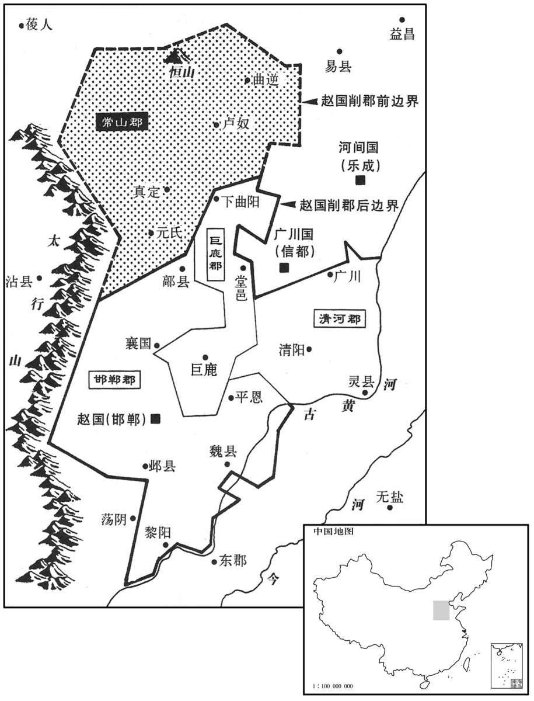
本年形势与背景参考图
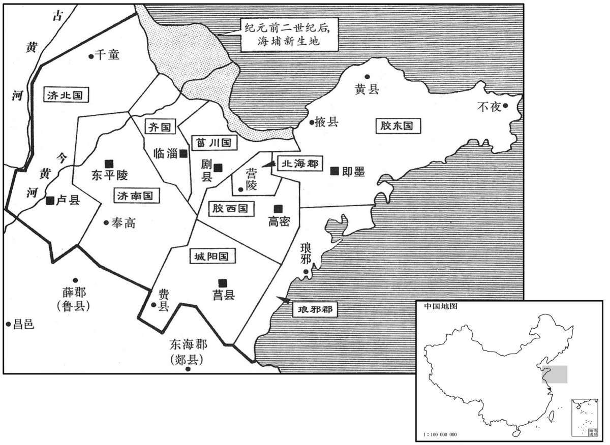
本年形势与背景参考图
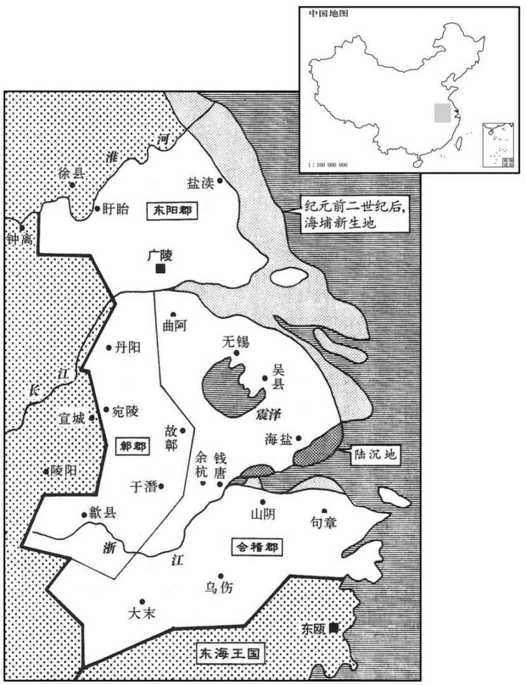
本年形势与背景参考图
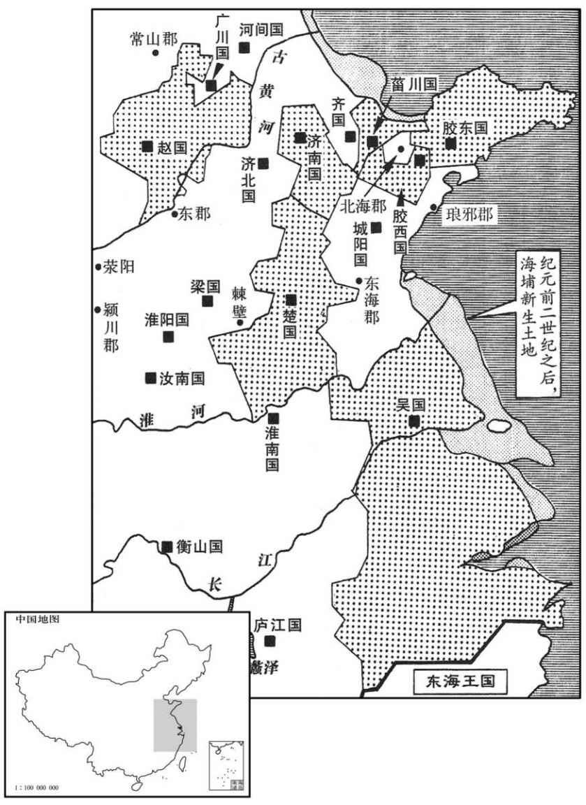
本年形势与背景参考图
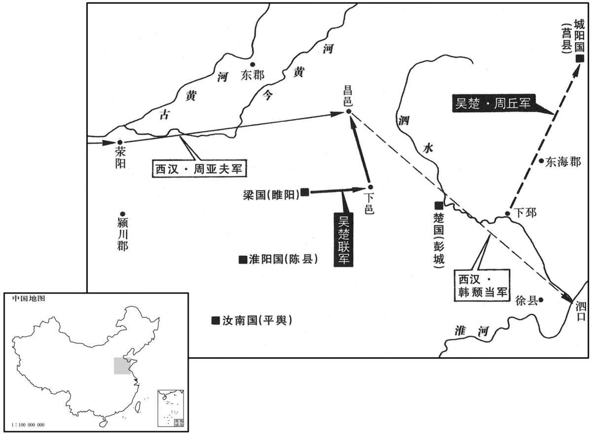
本年形势与背景参考图
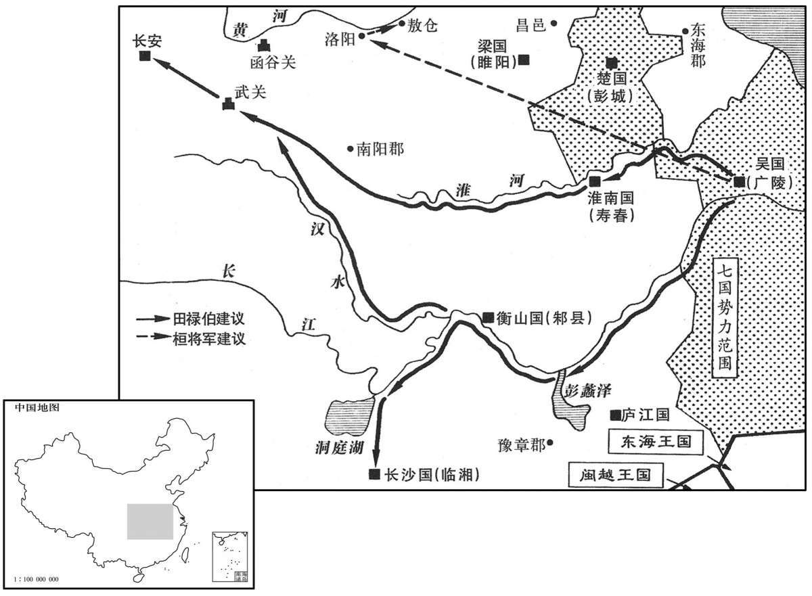
本年形势与背景参考图
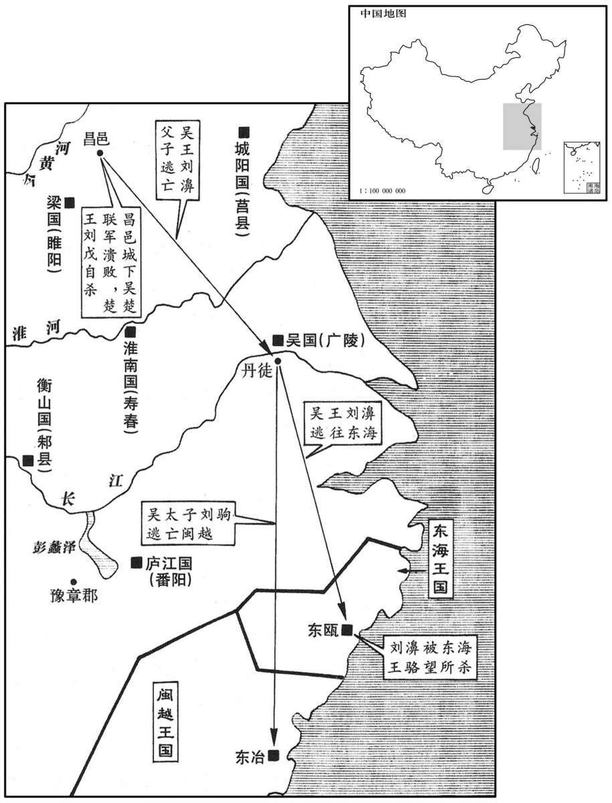
本年形势与背景参考图
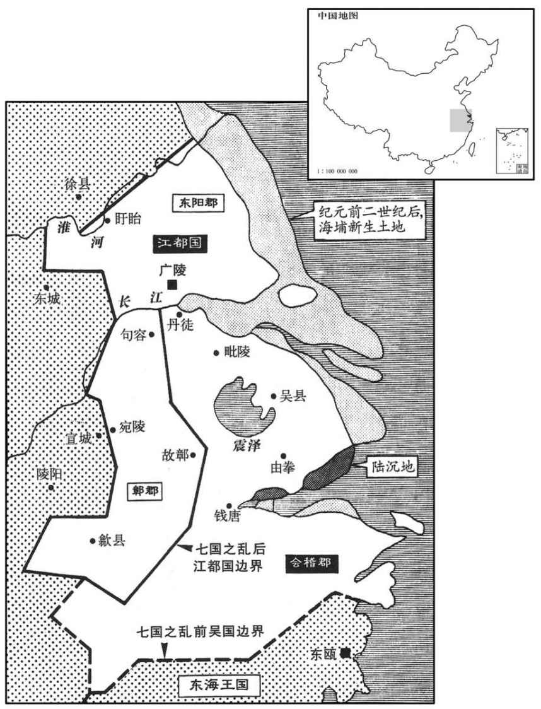
本年形势与背景参考图
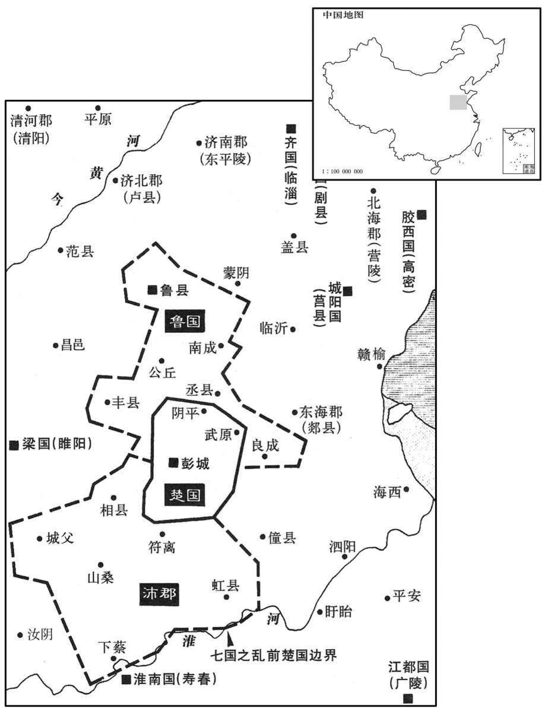
本年形势与背景参考图
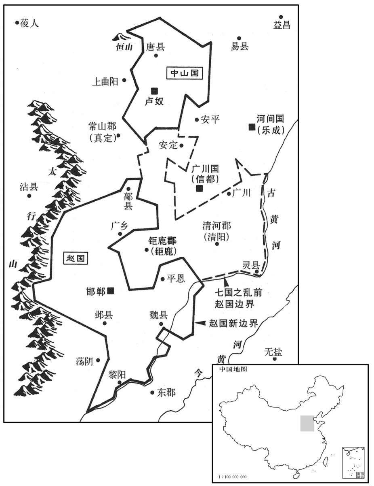
本年形势与背景参考图
冬，十月，梁王来朝。〔朝，直遥翻。〕时上未置太子，与梁王宴饮，从容言曰：〔从，千容翻。〕“千秋万岁后传于王。”王辞谢，虽知非至言，然心内喜；〔孔颖达曰：喜者，外竟会心之谓。〕太后亦然。詹事窦婴〔班表：詹事，秦官，掌皇后、太子家。应劭曰：詹，省也，给也。臣瓒曰：茂陵书：詹事，秩真二千石。师古曰：皇后、太子各置詹事，随其所在以名官。〕引卮酒进上曰：“天下者，高祖之天下，父子相传，汉之约也，上何以得传梁王！”太后由此憎婴；〔引酒进之，盖罚爵也。〕婴因病免；太后除婴门籍，不得朝请。〔门籍，出入宫殿门之籍也。请，材性翻，又如字。〕梁王以此益骄。
冬季，十月，梁王来长安朝见景帝。当时，景帝没有立太子，与梁王宴饮时，景帝很舒缓地说：“等我百年之后，把帝位传给你。”梁王表示谦谢，虽然知道这不是认真的话，但心中很高兴；窦太后也是如此。詹事窦婴捧着一杯酒献给景帝说：“这个天下，是高祖的天下，帝位由父亲传给儿子，这是汉朝的规定，皇上怎么能够传给梁王！”窦太后因此憎恶窦婴；窦婴便借口有病而辞职；窦太后在准许出入皇宫殿门的名册上除去了窦婴的姓名，不许他参加春秋两季的盛大朝会。梁王因此更加骄横。
春，正月，乙巳，赦。
春季，正月，乙巳（二十二日），景帝下达赦令。
长星出西方。
彗星出现在西方天空。
洛阳东宫灾。〔洛阳县，河南郡治所。高祖先居洛阳，因筑宫室，有南宫、北宫、东宫。〕
洛阳的东宫发生火灾。
初，孝文时，吴太子入见，〔楚汉春秋曰：吴太子，名贤，字德明。见，贤遍翻。〕得侍皇太子饮、博。吴太子博争道，不恭；皇太子引博局提吴太子，杀之。〔提，徒计翻。〕遣其丧归葬，至吴，吴王愠曰：〔愠，于问翻。师古曰：怒也。孔颖达曰：愠者，外竟违心之谓；事与心违，所以怒生。〕“天下同宗，〔师古曰：犹言同姓共为一家。〕死长安即葬长安，何必来葬为！”复遣丧之长安葬。吴王由此稍失藩臣之礼，称疾不朝。〔朝，直遥翻。〕京师知其以子故，系治、验问吴使者；吴王恐，始有反谋。后使人为秋请，〔应劭曰：冬当断狱，秋先请择其轻重也。孟康曰：律：春曰朝，秋曰请。如淳曰：濞不自行，使人代己致请礼。索隐曰：音净；孟说是。〕文帝复问之，〔复，扶又翻。〕使者对曰：“王实不病；汉系治使者数辈，吴王恐，以故遂称病。夫『察见渊中鱼不祥』；〔服虔曰：语天子察见下之私则不祥也。索隐曰：案此语见韩子及文子。韦昭曰：知臣下阴私，使忧患生，变为不祥，故当赦宥使自新也。〕唯上弃前过，与之更始。”〔师古曰：言赦其已往之事，使得自新也。更，工衡翻。〕于是文帝乃赦吴使者，归之，而赐吴王几杖，老，不朝。吴得释其罪，谋亦益解。然其居国，以铜、盐故，百姓无赋；〔索隐曰：吴国有铸钱、煮盐之利，故百姓不别徭赋也。〕卒践更，辄予不贾；〔服虔曰：以当为更卒，出钱三百，谓之过更；自行为卒，谓之践更。吴王欲得民心，以为卒者雇其庸，随时月予平贾。晋灼曰：谓借人自代为卒者，官为出钱雇，其时庸平贾也。师古曰：晋说是。索隐曰：案汉律，卒更有三：践更、居更、过更也。此言践更辄与平贾者，谓为践更合自出钱，今吴王欲得人心，乃予平贾，官雠之也。予，读曰与；下同。贾，读曰价。〕岁时存问茂材，赏赐闾里；他郡国吏欲来捕亡人者，公共禁弗予。如此者四十余年。
当初，孝文帝在位时，吴国太子进京朝见文帝，得以陪伴皇太子饮酒、博戏。吴太子在博戏过程中与太子争棋路，态度不恭；皇太子就拿起棋盘猛击吴太子，把他打死了。朝廷送他的灵柩回去安葬，灵柩到达吴国，吴王恼怒地说：“天下都是刘氏一家的天下，死在长安就葬在长安，何必送回来安葬呢！”吴王又把太子的灵柩送回长安安葬。吴王从此渐渐失去藩臣的礼节，声称身体有病，不来朝见皇帝。京城知道吴王是为了儿子的缘故，就拘留和审问吴国的使者；吴王恐惧，开始产生了谋反的念头。后来，吴王派人代替他去长安行秋季朝见之礼，文帝再一次追问吴王不来朝见的原因，使臣回答说：“吴王其实没有生病；朝廷拘留了几批吴国使者，又治他们的罪，吴王恐惧，所以才声称有病。有这么一句话，‘察见深潭中的鱼，不吉利’；希望皇上不再追究他以前的过失，让他改过自新。”这样，文帝就释放了吴国使者，让他们回去；并且赏赐给吴王几案和拐杖，表示照顾他年事已高，不必前来朝见。吴王见朝廷不再追究他的罪名，谋反之心也就渐渐消除了。但是，因为他国内有冶铜、制盐的财源，便不向百姓征收赋税；百姓应该为官府服役时，总是由吴王发给代役金，另外雇人应役；每到年节时，慰问有贤才的士人，赏赐平民百姓；其他郡国的官吏要来吴国捕捉流亡的人，吴国公然阻止，不把罪犯交出去。这样，前后持续了四十多年。
鼌错数上书言吴过，可削；文帝宽，不忍罚，以此吴日益横。〔鼌，直遥翻。错，千故翻。数，所角翻。横，户孟翻。〕及帝即位，错说上曰：“昔高帝初定天下，昆弟少，诸子弱，〔说，式芮翻。少，诗沼翻。〕大封同姓，齐七十余城，楚四十余城，吴五十余城；封三庶孽，分天下半。今吴王前有太子之郄，〔郄，与隙同；下有郄同。〕诈称病不朝，于古法当诛。文帝弗忍，因赐几杖，德至厚，当改过自新；反益骄溢，即山铸钱，〔师古曰：即，就也。〕煮海水为盐，诱天下亡人谋作乱。今削之亦反，不削亦反。削之，其反亟，祸小；不削，反迟，祸大。”上令公卿、列侯、宗室杂议，莫敢难；独窦婴争之，由此与错有郄。〔难，乃旦翻。郄，与隙同。〕及楚王戊来朝，错因言：“戊往年为薄太后服，私奸服舍，〔师古曰：服舍，居丧之次，若垩室之属也。〕请诛之。”诏赦，削东海郡。〔东海郡，即秦郯郡，高帝更名。〕及前年，赵王有罪，削其常山郡；胶西王昂以卖爵事有奸，〔胶西后改为高密。〕削其六县。
晁错多次上书奏说吴王的罪过，认为可以削减其封地；汉文帝宽厚，不忍心惩罚，所以吴王日益骄横。等到汉景帝即位，晁错劝说景帝：“当初，高帝刚刚平定天下，兄弟少，儿子们年幼，大封同姓诸侯王，封给齐国七十多座城，封给楚国四十多座城，封给吴国五十多座城；封给这三个并非嫡亲的诸侯王的领地，就去了全国的一半。现在，吴王以前因有吴太子之死的嫌隙，假称有病不来朝见，按照古法应当处死。文帝不忍心，因而赐给他几案手杖，对他是恩德极为深厚，他本应该改过自新；但他反而更加骄横无法，利用矿山采铜铸钱，熬海水制盐，招诱天下流亡人口，图谋叛乱。如今，削减他的封地他会叛乱，不削减他的封地，他也会叛乱；如果削减他的封地，他反得快，祸害会小一些；如果不削减他的封地，他反得慢，将来有备而发，祸害更大。”景帝下令公卿、列侯、宗室 共同讨论晁错的建议，没有人敢与晁错辩驳；只有窦婴一人坚决反对，从此与晁错之间产生了矛盾。等到楚王刘戊来京朝见，晁错借机说：“刘戊去年为薄太后服丧期间，在服丧的居室里私下奸淫，请求处死他。”景帝下诏，免去刘戊的死罪，但把原楚国封地东海郡收归朝廷。另外，在前一年，赵王有罪，朝廷削夺了他的常山郡；胶西王刘因在卖爵事上有不法行为，朝廷削夺了他封地中的六县之地。
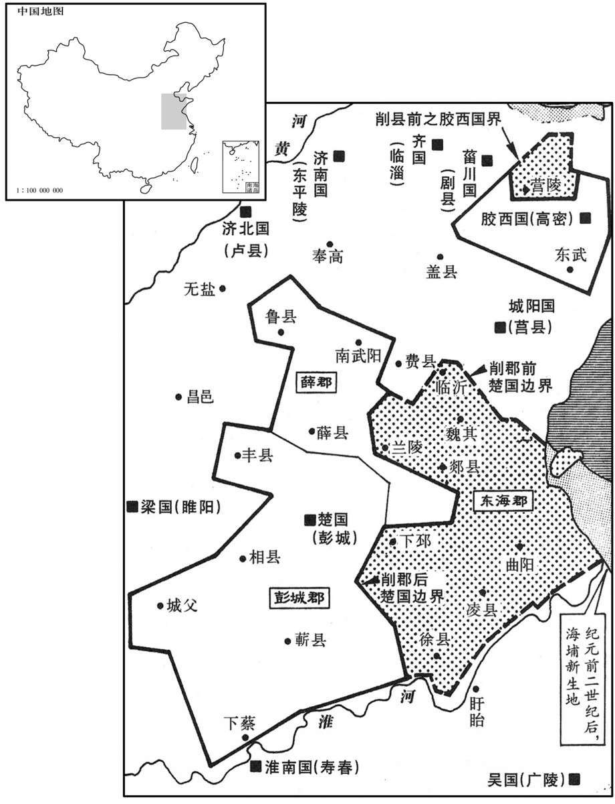
廷臣方议削吴。吴王恐削地无已，因发谋举事；念诸侯无足与计者，闻胶西王勇，好兵，〔好，呼到翻。〕诸侯皆畏惮之，于是使中大夫应高口说胶西王曰：〔应本自周武王后。左传曰：邘，晋、应、韩，武之穆也。〕“今者，主上任用邪臣，听信谗贼，侵削诸侯，诛罚良重，〔师古曰：良，实也，信也。〕日以益甚。语有之曰：『狧穅及米。』〔师古曰：狧，古字，食尔翻。狧，用舌食也，盖以犬为谕。言初狧穅，遂至食米也。索隐曰：言狧穅尽则至米，谓削土尽则至灭国也。〕吴与胶西，知名诸侯也，一时见察，不得安肆矣。〔师古曰：肆，纵也。〕吴王身有内疾，〔师古曰：谓疾在身中，不显于外也。〕不能朝请二十余年，常患见疑，无以自白，胁肩累足，犹惧不见释。〔师古曰：胁，翕也，谓敛之也；累足，重足也；并谓惧耳。释，解也，放也。累，与絫同。〕窃闻大王以爵事有过。所闻诸侯削地，罪不至此；〔师古曰：言其罪皆不至于削地。〕此恐不止削地而已！”王曰：“有之。子将柰何？”高曰：“吴王自以为与大王同忧，愿因时循理，弃躯以除患于天下，意亦可乎？”胶西王瞿然骇曰：〔瞿，居具翻。说文：瞿，远视貌。师古曰：瞿然，无守之貌。〕“寡人何敢如是！主上虽急，固有死耳，安得不事！”高曰：“御史大夫鼌错，营惑天子，〔师古曰：营，谓回绕之也。〕侵夺诸侯，〔【章：甲十五行本“侯”下有“朝廷疾怨”四字；乙十一行本同；张校同；退斋校同。】〕诸侯皆有背叛之意，人事极矣。彗星出，〔背，蒲妹翻。彗，祥岁翻；又徐醉翻；又旋芮翻。〕蝗虫起，此万世一时；而愁劳，圣人所以起也。〔索隐曰：所谓殷忧以启明圣也。〕吴王内以鼌错为铢，外从大王后车，方洋天下，〔方，音房，又音旁。洋，犹翱翔也。〕所向者降，〔降，户江翻。〕所指者下，莫敢不服。大王诚幸而许之一言，则吴王率楚王略函谷关，守荥阳、敖仓之粟，距汉兵，治次舍，须大王。〔师古曰：次舍，息立之处。须，待也。治，直之翻。〕大王幸而临之，则天下可并，两主分割，不亦可乎！”王曰：“善！”归，报吴王，吴王犹恐其不果，乃身自为使者，至胶西面约之。胶西群臣或闻王谋，谏曰：“诸侯地不能当汉十二，为叛逆以忧太后，非计也。〔文颖曰：谓王之太后也。〕今承一帝，尚云不易；〔易，以豉翻。〕假令事成，两主分争，患乃益生。”王不听，遂发使约齐、菑川、胶东、济南，皆许诺。〔齐王将闾，菑川王贤，胶东王雄渠，济南王辟光，皆文帝封。济，子礼翻。〕
朝廷大臣们正在议论削夺吴王的封地。吴王刘濞恐怕削夺没有止境，就打算举兵叛乱；想到其他诸侯王没有足以共商大事的，听说胶西王刘勇武，喜欢兵法，诸侯都畏惧他，于是，吴王派中大夫应高去亲口游说胶西王刘，说：“现在，主上重用奸邪之臣，听信谗言恶语，侵夺削弱诸侯国，对诸侯王的惩罚极为严厉，而且一天比一天厉害。俗语有这样的说法：‘开头吃糠，后来就会发展到吃米。’吴国和胶西国，都是著名的诸侯王国，同时朝廷注意，不会有安宁了。吴王身体患有暗疾，已有二十多年不能朝见，时常担心受到朝廷怀疑，无法自己表白，缩紧肩膀、脚压着脚地自我约束，仍怕得不到朝廷的宽容，我私下听说大王因出卖爵位的过失而受朝廷处置。我所听到的其他诸侯被削夺封地的事情，若按所犯罪名来处理，都不应该受到如此严重的惩罚。恐怕朝廷的用意，不仅仅是要削夺诸侯王的封地吧！”胶西王刘说：“我确实有被削夺的事。你认为该怎么办？”应高说：“吴王自认为与大王面临着共同的忧患，希望顺应时势，遵循情理，牺牲生命去为天下消除祸患，我想您也同意吧？”胶西王大吃一惊，说：“我怎么敢做这样的事！天子待诸侯虽然很严苛，我只有一死了事，怎能起意反叛呢？应高说：“御史大夫晁错，在天子身边蒙骗蛊惑，侵夺诸侯封地，诸侯王都有背叛之心，从人事来看，形势已发展到极点了。彗星出现，蝗灾发生，这是千载难逢的好时机；而且愁恼困苦的局势，正是圣人挺身而出之时。吴王准备对朝廷提出清除晁错的要求，在战场上则跟随于大王之后，纵横天下，所向无敌，锋芒所指之处，没有人胆敢不服。大王若真能许诺一句话，吴王就率领楚王直捣函谷关，据守荥阳、敖仓的粮库，敌御汉军，整治好驻扎之地，恭候大王到来。有幸得到大王光临，就可以吞并天下，吴王和大王平分江山，不也很好吗！”胶西王说：“好！”应高返归崐吴国，向吴王汇报，吴王还怕胶西王不实行诺言，就亲自前往，到胶西国与刘当面约定。胶西国群臣中，有人得知胶西王的图谋，谏阻说：“诸侯王的封地还不到汉朝廷的十分之二，发动叛乱而使太后担忧，这不是高明的计策。现在侍奉一个天子，都说不容易；假设吴与胶西的计划能够成功，两位君主并立相争，祸患就更多了。”胶西王不听，于是派使者与齐王、川王、胶东王、济南王约定共同举事，这些诸侯王都答应了。
初，楚元王好书，〔好，呼到翻。〕与鲁申公、穆生、白生俱受诗于浮丘伯；及王楚，以三人为中大夫。〔及王，于况翻。〕穆生不耆酒；元王每置酒，常为穆生设醴。及子夷王、孙王戊即位，〔楚元王交，高祖异母弟。楚子重、子辛皆出于穆王，楚人谓之“二穆”，故楚有穆姓。秦有白乙丙、白圭，楚有白公。浮丘，复姓。夷王，名郢客，元王子。戊元王孙。师古曰：醴，甘酒，少曲多米，二宿而熟。不耆之耆，读曰嗜。为，于伪翻；下同。〕常设，后乃忘设焉。〔忘，巫放翻。〕穆生退，曰：“可以逝矣！醴酒不设，王之意怠；不去，楚人将钳我于市。”遂称疾卧。申公、白生强起之，〔强，其两翻。〕曰：“独不念先王之德与？〔与，读曰欤。〕今王一旦失小礼，何足至此！”穆生曰：“易称：『知几其神乎！几者，动之微，吉凶之先见者也。〔几，居衣翻。师古曰：易下系之辞。见，户电翻。〕君子见几而作，不俟终日。』先王之所以礼吾三人者，为道存也；今而忽之，是忘道也。忘道之人，胡可与久处，岂为区区之礼哉！”〔区区，谓小也。处昌吕翻。为，于伪翻。〕遂谢病去。申公、白生独留。王戊稍淫暴，太傅韦孟作诗讽谏，不听，亦去，居于邹。〔姓谱：韦姓出颛顼大彭豕韦之后。〕戊因坐削地事，遂与吴通谋。申公、白生谏戊，戊胥靡之，衣之赭衣，使雅舂于市。〔晋灼曰：高肱举杵，正身而舂之。师古曰：为木杵而手舂，即今所谓步臼者耳。衣之，于既翻。〕休侯富使人谏王。〔孟子去齐居休。赵岐注曰：休，地名；盖即富所封之地。富，楚元王之子，夷王之弟也。〕王曰：“季父不吾与，我起，先取季父矣！”休侯惧，乃与母太夫人奔京师。〔臣瓒曰：侯母号太夫人。〕
当初，楚元王刘交喜爱书籍，和鲁地人申公、穆生、白生都拜浮丘伯为师，学习《诗经》；等到他当了楚王，就任命他们三人为中大夫。穆生不喜欢喝酒；楚元王每次设宴饮酒时，都特意为穆生准备甜酒。等到楚元王的儿子夷王以及孙子刘戊为王时，也总在举行宴会时为穆生特备甜酒，但以后就忘记这样做了。穆生退席而出，说：“应该离去了！不特设甜酒，说明楚王对我已怠慢了；再不离去，楚王将会给我戴上刑具在街市上示众。”于是，穆生声称有病，卧床不起。申公、白生极力劝他继续为楚王效力，说：“你就不念先王的恩德吗？现在楚王一时稍有礼貌不周怎么至于这样！”穆生说：”《易经》上说：‘知道契机的神妙吗？契机，是动机的微妙变化，是显示吉凶的先兆。君子看到契机而采取行动，并不整天等待。’先王礼待我们三人的原因，是他心中有道义；现在楚王怠慢我们，是忘记了道义。怎么能和忘记了道义的人长期共处，难道我这样只是因为那区区的礼节吗！”于是，穆公声称有病，离开了楚国。申公和白生却继续留任楚国。楚王刘戊逐渐荒淫残暴，太傅韦孟作了一首诗，用来进行委婉的批评，楚王不加理睬，韦孟也离开楚国，去邹地居住。刘戊因犯罪被朝廷削夺封地，就与吴王刘濞通谋，准备叛乱。申公、白生去劝谏刘戊，刘戊将他们二人罚为罪徒，让他们被绳拴着，穿着刑徒的红褐色囚衣，在街市上舂米。休侯刘富派人来劝阻楚王，楚王说：“叔父不与我合作，我一旦起事，就先攻打叔父了！”休侯刘富害怕，就与他的母亲太夫人逃奔长安。
及削吴会稽、豫章郡书至，吴王遂先起兵，诛汉吏二千石以下；胶西、胶东、菑川、济南、楚、赵亦皆反。楚相张尚、太傅赵夷吾谏王戊，戊杀尚、夷吾。赵相建德、内史王悍谏王遂，遂烧杀建德、悍。〔悍，下罕翻，又侯旰翻。〕齐王后悔，背约城守。〔背，蒲妹翻。守，式又翻。〕济北王城坏未完，其郎中令劫守，王不得发兵。胶西王、胶东王为渠率，〔师古曰：渠，大也。率，所类翻。〕与菑川、济南共攻齐，围临菑。〔临菑，齐都。〕赵王遂发兵住其西界，欲待吴、楚俱进，北使匈奴与连兵。〔使，疏吏翻；下同。〕
及至朝廷削夺吴国会稽郡、豫章郡的文书到达，吴王刘濞就首先起兵，杀死朝廷任命的二千石以下的官员；胶西王、胶东王、川王、济南王、楚王、赵王也都举兵叛乱。楚相张尚、太傅赵夷吾谏阻楚王刘戊，刘戊杀死了张尚和赵夷吾。赵相建德、内史王悍谏止赵王刘遂，刘遂将他们两人烧死。齐王后悔通谋叛乱，违背与吴楚的盟约，依据城池进行抵御。济北王的城墙坏了没有修好，他的郎中令劫持了他，使他无法举兵参加叛乱。胶西王和胶东王为统帅，联合川王、济南王共同攻打齐国，围攻齐国都城临淄。赵王刘遂把军队调往赵国西部边境，准备与吴、楚等国军队联合进攻，又向北方的匈奴派出使者，联络匈奴一起举兵。
吴王悉其士卒，下令国中曰：“寡人年六十二，身自将；〔将，即亮翻。〕少子年十四，亦为士卒先。诸年上与寡人同，下与少子等，皆发。”凡二十余万人。南使闽、东越，〔使，疏吏翻。〕闽、东越亦发兵从。〔从，才用翻。〕吴王起兵于广陵，〔广陵，吴都。〕西涉淮，因并楚兵，发使遗诸侯书，罪状鼌错，〔遗，工，季翻。〕欲合兵诛之。吴、楚共攻梁，破棘壁，〔索隐曰：按左氏传，宣公二年，宋华元战于大棘。杜预曰：在襄邑东南；盖即棘壁是也。括地志：大棘故城，在宋州宁陵县西南七十里。〕杀数万人；乘胜而前，锐甚。梁孝王遣将军击之，又败梁两军，〔败，补迈翻。〕士卒皆还走。梁王城守睢阳。〔睢阳，梁都。睢，音虽。〕
吴王征发了所有士卒，下令全国说：“我今年六十二岁了，亲自担任统帅；我的小儿子十四岁，也身先士卒。所有年龄上与我一样，下与我的小儿子一样的人，都征发从军！”吴国共征发了二十多万人。吴王向南方派出使者去联络闽、东越，闽和东越也发兵响应。吴王在广陵起兵，向西渡过淮河，随即与楚国的军队合并，派使者致书诸侯，指控晁错罪状，准备联合进兵诛杀晁错。吴、楚两国军队一起攻打梁国，攻破了棘壁，杀死数万人；吴、楚联军乘胜前进，兵锋锐不可当。梁孝王派将军迎击，又有两支军队被吴楚联军打败，梁军士兵都向后逃跑。梁王固守都城睢阳。
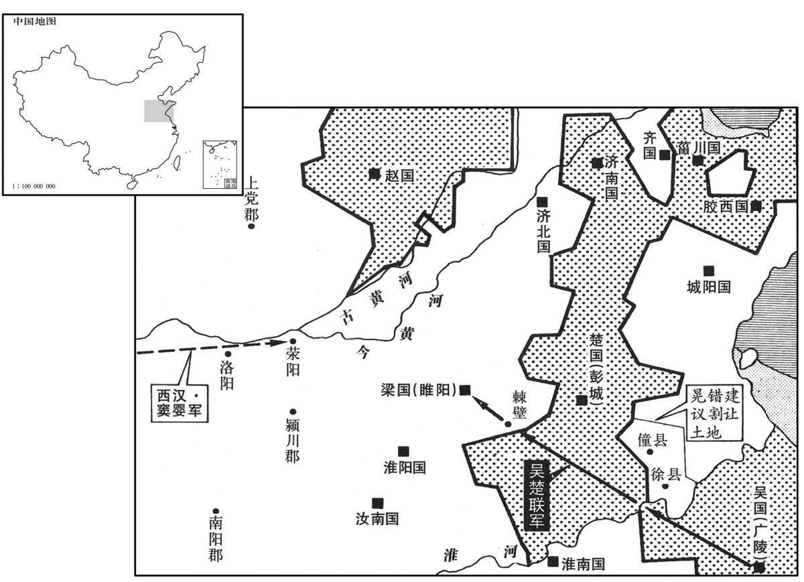
初，文帝且崩，戒太子曰：“即有缓急，周亚夫真可任将兵。”及七国反书闻，上乃拜中尉周亚夫为太尉，将三十六将军往击吴、楚，遣曲周侯郦寄击赵，〔班志，曲周县属广平国。〕将军栾布击齐；复召窦婴，拜为大将军，使屯荥阳监齐、赵兵。〔班志，荥阳县属河南郡。监，古衔翻。〕
当初，汉文帝临终前，告诉太子说：“假若国家有危难，周亚夫足以胜任军队统帅的重担。”等到七国叛乱的文书到达朝廷，景帝就任命中尉周亚夫为太尉，统帅三十六位将军及其部队，前去迎击吴、楚叛军；派遣曲周侯郦寄攻打赵国，派将军栾布攻打齐境叛军；景帝又召回窦婴，任命他为大将军，让他率军驻守荥阳，监督用兵于齐国和赵国境内的汉军。
初，鼌错所更令三十章，〔更，工衡翻。〕诸侯讙哗。〔讙，许元翻。〕错父闻之，从颍川来，〔错，颍川人。〕谓错曰：“上初即位，公为政用事，侵削诸侯，疏人骨肉，〔疏，与疎同。〕口语多怨，公何为也？”错曰：“固也；不如此，天子不尊，宗庙不安。”父曰：“刘氏安矣而鼌氏危，吾去公归矣！”遂饮药死，曰：“吾不忍见祸逮身！”后十余日，吴、楚七国俱反，以诛错为名。
当初，晁错所修改的法令有三十章，诸侯王纷纷议论表示反对。晁错的父亲得知消息，从颍川赶来京师，对晁错说：“皇上刚刚即位，你当权处理政事，侵夺削弱诸侯，疏离人家的骨肉，舆论都怨恨你，你为什么这样做呢？”晁错说：“本当这样做；如果不这样做，天子不尊贵，宗庙不安宁。”他的父亲说：“这样做，刘氏的天下安宁了，但晁氏却危险了，我离开你回去了！”他父亲就服毒自杀，临死前说：“我不忍心见到大祸临到我身上！”此后过了十多天，吴、楚等七国就以诛除晃错为名一同举兵叛乱。
上与错议出军事，错欲令上自将兵而身居守；〔守，式又翻。〕又言：“徐、僮之旁吴所未下者，可以予吴。”〔徐、僮二县皆属临淮郡。错初议削诸侯地以强汉，及七国反，乃欲以徐、僮之旁予吴；是自畔其说，恶得无死乎！予，读曰与。〕错素与吴相袁盎不善，〔相，息亮翻。〕错所居坐，盎辄避；盎所居坐，错亦避；〔坐，徂卧翻。〕两人未尝同堂语。及错为御史大夫，使吏按盎受吴王财物，抵罪；诏赦以为庶人。吴、楚反，错谓丞、史曰：〔班表：御史大夫有两丞，秩千石；侍御史十五人。〕“袁盎多受吴王金钱，专为蔽匿，言不反；今果反，欲请治盎，宜知其计谋。”丞、史曰：“事未发，治之有绝；〔如淳曰：事未发之时治之，乃有所绝也。治，直之翻。〕今兵西向，治之何益！且盎不宜有谋。”错犹与未决。〔犹与，即犹豫也。与，去声。〕人有告盎，盎恐，夜见窦婴，为言吴所以反，愿至前，口对状。婴入言，上乃召盎。盎入见，〔为，于伪翻。入见，贤遍翻。〕上方与错调兵食。〔师古曰：调，计也，计发兵食也。调，徒钓翻。〕上问盎：“今吴、楚反，于公意何如？”对曰：“不足忧也！”上曰：“吴王即山铸钱，煮海为盐，诱天下豪杰；白头举事，此其计不百全，岂发乎！何以言其无能为也？”对曰：“吴铜盐之利则有之，安得豪杰而诱之！〔诱，音酉。〕诚令吴得豪杰，亦且辅而为谊，不反矣。吴所诱皆无赖子弟、亡命、铸钱奸人，〔章怀太子贤曰：命，名也，谓脱其名籍而逃亡。〕故相诱以乱。”错曰：“盎策之善。”上曰：“计安出？”盎对曰：“愿屏左右。”上屏人，独错在；盎曰：“臣所言，人臣不得知。”乃屏错。〔屏，必郢翻。〕错趋避东厢，甚恨。上卒问盎，〔卒，子恤翻；下卒受同。〕对曰：“吴、楚相遗书，言高皇帝王子弟各有分地，〔遗，于季翻。分，扶问翻。〕今贼臣鼌错擅适诸侯，〔适，读曰谪。〕削夺之地，以故反，欲西共诛错，复故地而罢。方今计独有斩错，发使赦吴、楚七国，〔使，疏吏翻；下使吴同。〕复其故地，则兵可毋血刃而俱罢。”于是上默然良久，曰：“顾诚何如？吾不爱一人以谢天下。”盎曰：“愚计出此，唯上孰计之！”〔孰，与熟同。〕乃拜盎为太常，〔中六年，始改奉常为太常，时盎犹为奉常也。〕密装治行。〔治，直之翻。〕后大余日，上令丞相青、中尉嘉、廷尉欧〔丞相陶青，中尉嘉，失其姓，廷尉张欧。〕劾奏错：“不称主上德信，欲疏群臣、百姓，又欲以城邑予吴，无臣子礼，大逆无道。错当要斩，〔劾，户概翻。疏，与疎同。予，读曰与。要，与腰同。〕父母、妻子、同产无少长皆弃市。”〔少，诗照翻。长，知两翻。〕制曰：“可。”错殊不知。壬子，上使中尉召错，绐载行市，〔师古曰：诳云乘车案行市中也。行，下孟翻。〕错衣朝衣斩东市。〔衣朝，上于既翻，下直遥翻。〕上乃使袁盎与吴王弟子宗正德侯通使吴。〔高祖兄仲之子广封德侯，生通。德，侯国，在泰山界〕
景帝与晁错商谈出军平叛的事情，晁错想让景帝统兵亲征而他自己留守长安；晁错又建议：“徐县、僮县附近一带，吴国没有攻占的地方，可以送给吴国，争取他们退兵。”晁错一直与吴相袁盎不友善，有晁错在某处就坐，袁盎总是避开；袁盎出现在何处，晁错也总是避开；两人未曾在同一个室内说过话。等到晁错升任御史大夫，派官员审查袁盎接受吴王财物贿赂的事，处以相当崐的刑罚，确定袁盎有罪；景帝下诏赦免袁盎，把他降为平民。吴、楚叛乱发生后，晁错对御史丞、侍御史说：“袁盎接受了吴王的许多金钱，专门为吴王掩饰，说他不会叛乱；现在，吴王果然反叛了，我想奏请严惩袁盎，他肯定知道吴王的密谋。”御史丞、侍御史说：“如果在吴国叛乱前，治袁盎的罪，可能会中止叛乱密谋；现在叛军大举向西进攻，审查袁盎，能有什么作用！况且，袁盎不会参预密谋。”晁错犹豫不决。有人把晁错的打算告知了袁盎，袁盎很害怕，连夜去见窦婴，对他说明吴王叛乱的原因，希望能面见景帝，亲口说明原委。窦婴入宫奏报景帝，景帝就召见袁盎。袁盎入宫晋见，景帝正与晁错在调度军粮。景帝问袁盎：“现在吴、楚叛乱，你觉得局势会怎样？”袁盎回答说：“不值得担忧！”景帝说：“吴王利用矿山就地铸钱，熬海水为盐，招诱天下豪杰；到年老发白时举兵叛乱，如果他没有计出万全的把握，难道会起事吗？为什么说他不能有所作为呢？袁盎回答说：“吴王确实有采铜铸币、熬海水为盐的财利，但哪有什么豪杰被他招诱去了呢！假若吴王真的招到了豪杰，豪杰也会辅佐他按仁义行事，也就不会叛乱了。吴王所招诱的，都是些无赖子弟、没有户籍的流民、私铸钱币的坏人，所以才能相互勾结而叛乱。”晁错说：“袁盎分析得很好。”景帝问：“应采取什么妙计？”袁盎说：“请陛下让左右回避。”景帝让人退出，唯独还有晁错在场；袁盎说：“我要说的话，任何臣子都不应听到。”景帝就让晁错回避。晁错迈着小而快的步伐，退避到东边的厢房中，对袁盎极为恼恨。景帝突然问袁盎，袁盎回答说：“吴王和楚王互相通信，说高皇帝分封子弟为王，各自有封地，现在贼臣晁错擅自贬谪诸侯，削夺他们的封地，因此他们才造反，准备向西进军，共同诛杀晁错，恢复原有的封地才罢休。现在的对策，只有斩晁错，派出使臣宣布赦免吴、楚七国，恢复他们原有的封地，那么，七国的军队可以不经过战争就都会撤走。”于是，景帝沉默了很长时间，说：“不这样做，还有什么别的办法？我不会为了爱惜他一个人而向天下谢罪的。”袁盎说：“我计策就是这样，请皇上认真考虑！”景帝就任命袁盎为太常，秘密收拾行装，做出使吴王的准备。过了十多天，景帝授意丞相陶青、中尉嘉、廷尉张欧上疏弹劾晁错：“辜负皇上的恩德和信任，要使皇上与群臣、百姓疏远，又想把城邑送给吴国，毫无臣子的礼节，犯下了大逆无道之罪。晁错应判处腰斩，他的父母、妻子、兄弟不论老少全部公开处死。”景帝批复说：“同意所拟判决。”晁错对此却一无所知。壬子（二十九日），景帝派中尉召晁错，欺骗他说坐着车巡察市中，于是，晁错穿着上朝的官服在东市被斩首。景帝就派袁盎与吴王的侄子、宗正德侯刘通为使臣，出使吴国。
谒者仆射邓公为校尉，上书言军事，见上，〔校，户教翻。上书之上，时掌翻。〕上问曰：“道军所来，〔如淳曰：道路从吴军所来也。臣瓒曰：道，由也。〕闻鼌错死，吴、楚罢不？”〔不，读曰否。〕邓公曰：“吴为反数十岁矣；发怒削地，以诛错为名，其意不在错也。且臣恐天下之士钳口不敢复言矣。”〔钳，其炎翻。复，扶又翻。〕上曰：“何哉？”邓公曰：“夫鼌错患诸侯强大不可制，故请削之以尊京师，万世之利也。计画始行，卒受大戮；〔卒，子恤翻，或读为猝。〕内杜忠臣之口，外为诸侯报仇，臣窃为陛下不取也。”〔为，于伪翻。〕于是帝喟然长息曰：“公言善，吾亦恨之！”
谒者仆射邓公正担任校尉，向景帝上书分析战争情况，在进见皇帝时，景帝问道：“你从军中而来，听到晁错被杀，吴国和楚国撤兵了没有？”邓公说：“吴王准备叛乱已有几十年了；他是因朝廷削夺了他的封地发怒，杀晁错只是他的借口，他的本意不在晁错啊。再说，朝廷杀晃错，我担心天下的士大夫都不敢再向朝廷进忠言了！”景帝问：“为什么？”邓公说：“晁错忧虑诸侯王国势力过于强大，朝廷不能制服，所以，请求削减王国封地，从而尊崇朝廷，这本来是造福万世的好事。计划刚刚实行，他本人突然被杀。这样做，对内堵塞了忠臣的口，对外替诸侯王报了仇，我私下认为陛下不应该如此。”于是，景帝深深地感叹说：“您说得对，我也很后悔杀了晁错！”
袁盎、刘通至吴，吴、楚兵已攻梁壁矣。宗正以亲故，先入见，谕吴王，令拜受诏。〔宗正于濞，犹子之亲也。〕吴王闻袁盎来，知其欲说，〔说，式芮翻；下同。〕笑而应曰：“我已为东帝，尚谁拜！”不肯见盎，而留军中，欲劫使将；〔将，即亮翻。〕盎不肯，使人围守，且杀之。盎得间，脱亡归报。〔闻，古苋翻。〕
袁盎、刘通到达吴国，吴军和楚军已开始进攻梁国的壁垒了。宗正刘通因是同姓亲属，先入内会见吴王，告知吴王，让他跪拜接受皇帝的诏书。吴王听说袁盎来了，估计到他要劝说自己撤兵，就笑着回答说：“我已经做了东方的崐皇帝了，还向谁跪拜呢！”吴王不肯与袁盎见面，把他留在军营中，准备强迫他担任吴军 的将领；袁盎不答应，吴王派人把他关押起来，准备杀死他。袁盎寻机逃脱回来向景帝汇报出使情况。
太尉亚夫言于上曰：“楚兵剽轻，难与争锋，〔剽，匹妙翻。轻，虚劲翻。〕愿以梁委之，绝其食道，乃可制也。”上许之。亚夫乘六乘传，〔张晏曰：传车六乘也。乘，绳证翻。传，张恋翻。余据汉有乘传、驰传；文帝之自代入立也，张武等乘六乘传，今亚夫乘六传，六乘传之见于史者二，盖又与乘传不同也。〕将会兵荥阳。〔师古曰：会兵，谓集大兵。〕发至霸上，赵涉遮说亚夫曰：“吴王素富，怀辑死士久矣。此知将军且行，必置间人于肴、渑阸陿之间；〔渑，弥兖翻。肴山、渑池之间，其道阸陿。阸，于懈翻。陿，与狭同。〕且兵事尚〔【章：甲十五行本“尚”作“上”；乙十一行本同。】〕神密，将军何不从此右去，走蓝田，出武关，抵洛阳！间不过差一二日，〔自霸上左趋肴、渑至洛阳，其道便近；若自霸上右趋蓝田出武关至洛阳，其道迂曲，故差一二日。走，音奏。间，如字。〕直入武库，〔洛阳有武库。〕击鸣鼓。诸侯闻之，以为将军从天而下也。”太尉如其计，至洛阳，喜曰：“七国反，吾乘传至此，不自意全。”〔师古曰：言不自意得安全至洛阳也。〕今吾据荥阳，荥阳以东，无足忧者。”〔考异曰：史记、汉书皆云：“太尉得剧孟喜，如得一敌国，曰：『吴楚无足忧者。』按孟一游侠之士耳，亚夫得之，何足为轻重！盖其徒欲为孟重名，妄撰此言，不足信也。〕使吏搜肴、渑间，果得吴伏兵。乃请赵涉为护军。
太尉周亚夫对景帝说：“楚军剽悍敏捷，与他们正面交锋很难取胜，我建议放弃梁国，先断绝吴、楚军队的粮道，这样才可以制服它们。”景帝同意了这个部署。周亚夫乘坐着六辆驿站的马车，将去荥阳与大军会合。走到霸上，赵涉拦住去路，劝说周亚夫：“吴王一直很富有，早就收买了一批甘愿为他献身的刺客，现在得知将军将去前线，必定会在崤山、渑池之间的险要地段安排刺客对付您；况且军事行动最讲究秘密，将军为什么不改变路线，从此处向右走，经过蓝田，出武关，抵达洛阳！这样绕着走，不过差一两天，却可以直接进入洛阳武库，擂响战鼓。参与叛乱的诸侯王听到了，会认为将军是自天而降呢！”太尉按照他的计策行事，到达洛阳，高兴地说：“七国共同叛乱，我乘坐驿车平安到达此处，真是出乎意料之外。现在我已驻守荥阳，荥阳以东没有什么可担心的了。”周亚夫派官吏搜索崤山、渑池之间，果然抓住了吴国的伏兵。周亚夫就向景帝奏请，让赵涉担任护军。
太尉引兵东北走昌邑。〔昌邑，梁地，后为山阳郡治所。走，音奏；下同。〕吴攻梁急，梁数使使条侯求救，条侯不许；〔班志，勃海郡有修县，音条。数，所角翻。使使，上如字，下疏吏翻。〕又使使愬条侯于上。上使告条侯救梁，亚夫不奉诏，坚壁不出；而使弓高侯等将轻骑兵出淮泗口，〔韩王信之子颓当自匈奴中来归，封为弓高侯。功臣表：弓高属营陵；地理志，弓高属河间国。盖颓当受封于文帝之初，而河间国则三年所置，故志与表异。泗水南入淮，故谓之淮泗口。骑，奇寄翻。〕绝吴、楚兵后，塞其馕道。〔塞，悉则翻。馕，古饷字。〕梁使中大夫韩安国及楚相张尚弟羽为将军；羽力战，安国持重，乃得颇败吴兵。吴兵欲西，梁城守，不敢西；〔败，补迈翻。守，式又翻。〕即走条侯军，会下邑，〔下邑县属梁国。〕欲战。条侯坚壁不肯战；吴粮绝卒饥，数挑战，终不出。〔数，所角翻。挑，徒了翻。〕条侯军中夜惊，内相攻击，扰乱至帐下，亚夫坚卧不起，顷之，复定。吴奔壁东南陬，〔陬，子侯翻，隅也。〕亚夫使备西北；已而其精兵果奔西北，不得入。吴、楚士卒多饥死叛散，乃引而去。二月，亚夫出精兵追击，大破之。吴王濞弃其军，与壮士数千人夜亡走；楚王戊自杀。
太尉周亚夫领兵向东北到达昌邑。吴军猛烈进攻梁国，梁王多次派使者向条侯周亚夫求救，周亚夫不答应。梁王又派使臣向景帝告状，说周亚夫不肯救援。景帝派使臣命令周亚夫援救梁国，周亚夫不执行皇帝诏令，仍坚守营垒，不派军队出战；但他却命令弓高侯韩颓当等人率领轻骑兵，奔袭淮泗口，断绝吴、楚军队的后路，堵塞吴、楚的粮道。梁国派中大夫韩安国及楚相张尚的弟弟张羽为将军；张羽作战勇猛，韩安国指挥持重，才得以挫败吴军。吴军想向西进兵，但因梁军据城死守，便不敢越过梁向西进兵；因此，吴军就前来进攻条侯周亚夫的军队，两军在下邑相遇，吴军急于求战。条侯坚守壁垒不肯交战；吴军粮道断绝，士卒饥饿，多次挑战，周亚夫始终不应战。周亚夫的军营中，夜间突然惊乱，内部互相攻击，甚至闹到了周亚夫的大帐附近，周亚夫坚持睡着不起，过了一会儿，就恢复平静了。吴军向汉军营垒的东南角调集军队，周亚夫却命令营中加强对西北方向的防御，不久，吴、楚的精兵果然突袭汉营西北，因汉军早有防备，不能攻入。吴、楚军队中，有许多士卒饿死或者背叛离散，吴王就领兵撤退了。二月，周亚夫派出精锐军队追击，大败吴、楚军队。吴王刘濞丢下他的军队，与几千名精壮士兵连夜逃跑；楚王刘戊自杀。
吴王之初发也，吴臣田禄伯为大将军。田禄伯曰：“兵屯聚而西，无他奇道，难以立功。臣愿得五万人，别循江、淮而上，〔上，时掌翻。〕收淮南、长沙，入武关，与大王会，此亦一奇也。”吴王太子谏曰：“王以反为名，此兵难以借人，人亦且反王，柰何？且擅兵而别，多他利害，〔苏林曰：禄伯傥将兵降汉，自为己利于吴生患也。〕徒自损耳！”吴王即不许田禄伯。
吴王刚开始举兵叛乱时，吴国臣子田禄伯担任大将军。田禄伯说：“大军集结向西进攻，没有可以出奇兵的通道，难以成功。我请求给我五万人马，另外沿长江、淮河逆流而上，占领淮南、长沙，攻入武关，与大王主力军队会师，这也是一路奇兵。”吴王的太子劝阻说：“大王以造反为名义，这样的军队不能让别人带领，假若别人也背叛您，又该怎么办？况且，让别人全权指挥一崐支军队，又走另外一条路，容易产生许多其他利害问题，只是白白地削弱了自己的力量！”吴王就没有批准田禄伯的请求。
王专并将兵。兵未渡淮，诸宾客皆得为将、校尉、候、司马，〔凡军行有大将、裨将领军，皆有部曲；部有校尉，曲有军候、军司马，又有假候、假司马，皆有副；其别营领属为别部司马。〕独周丘不用。周丘者，下邳人，〔班志，下邳属东海郡。〕亡命吴，酤酒无行；〔行，下孟翻。〕王薄之，不任。周丘乃上谒，说王曰：“臣以无能，不得待罪行间。〔上，时掌翻。说，式芮翻。行，户刚翻。〕臣非敢求有所将也，〔将，即亮翻。〕愿请王一汉节，必有以报。”王乃予之。〔予，读曰与。〕周丘得节，夜驰入下邳；下邳时闻吴反，皆城守。至传舍，召令入户，使从者以罪斩令，〔传，张恋翻。令，力正翻。从，才用翻。〕遂召昆弟所善豪吏告曰：“吴反，兵且至，屠下邳不过食顷；今先下，家室必完，能者封侯矣。”出，乃相告，下邳皆下。周丘一夜得三万人，使人报吴王，遂将其兵北略城邑；比至阳城，兵十余万，破阳城中尉军。〔“阳城”，汉书作“城阳”。城阳国都莒，其地南接下邳之境，班表：王国有中尉，掌武职。比，必寐翻，及也。〕闻吴王败走，自度无与共成功，〔度，徒洛翻。〕即引兵归下邳，未至，疽发背死。〔史言吴王有才不能用，以至于败。〕
吴王独揽全军指挥权。在吴军尚未渡过淮河时，吴王就把投靠他的众宾客任命为将军、校尉、军候、军司马，唯独周丘没有得到任用。周丘是下邳人，流亡到吴国，以卖酒为生，品行不好；吴王刘濞很鄙视他，所以未予任用。周丘就自己求见吴王，说：“我因为没有本事，不能在军队中为您效力。我不敢要求带兵做官，只希望从大王处得到汉朝的一个符节，必定做成一番事业来回报大王。”吴王就给了他。周丘得到符节，连夜驱车进入下邳县城；这时，下邳的官民得知吴王叛乱，都据城防守。周丘到达驿站，传召县令进入室内，命令他的随从用罪名把县令杀死，于是召见与他的兄弟们友善的有权势的官吏说：“吴王已经造反，大军马上就到，屠灭下邳城不过用吃顿饭的时间；如果先归降吴王，家室必定保全，有本事的人还能立功封侯。”官吏出去后，转 告给其他人，下邳的官民就都归顺了吴王。周丘一夜之间得到了三万人，派人向吴王汇报，就率领他的军队向北方攻取城邑；打到城阳时，周丘的军队已有十多万人了，打败了城阳中尉指挥的军队。周丘得知吴王失败逃走，自已估计无法和他共同成就事业了，就领兵返回下邳，还没有到达，因背上生毒疮而死去。
壬午晦，日有食之。
壬午晦（三十日），发生日食。
吴王之弃军亡也，军遂溃，往往稍降太尉条侯及梁军。〔降，户江翻。〕吴王渡淮，走丹徒，〔班志，丹徒县属会稽郡，即春秋之朱方。括地志：丹徒故城，在润州丹徒县东南十八里。南徐州记：秦使赭衣凿其处，因谓之丹徒，凿处今在故县西北六里丹徒岘东南。〕保东越，〔欲依东越以自保也。〕兵可万余人，收聚亡卒。汉使人以利啖东越，〔啖，徒览翻，饵之也；又徒滥翻，谯〔醮〕也，食也。〕东越即绐吴王出劳军，〔劳，力到翻。〕使人鏦杀吴王，〔孟康曰：方言：戟谓之鏦。苏林曰：鏦，音从容之从。师古曰：鏦，谓以矛戟撞杀之。鏦，楚江翻。〕盛其头，驰传以闻。〔盛，时征翻。传，张恋翻。〕吴太子驹亡走闽越。吴、楚反，凡三月，皆破灭，于是诸将乃以太尉谋为是；然梁王由此与太尉有隙。〔为梁王毁短亚夫张本。〕
因为吴王刘濞丢掉军队自己逃跑，吴军就崩溃瓦解了，许多部队渐渐向太尉条侯周亚夫和梁国的军队投降。吴王刘濞渡过淮河，逃到丹徒县，依附东越，以求自保，约有军队一万多人，并召集逃散的士兵。汉朝派人用金钱利禄收买东越首领，东越首领就骗吴王出来慰劳军队，派人用矛戟刺杀了吴王，装上他的头颅，派人乘传车疾驰到汉朝廷报告。吴国太子刘驹逃亡到闽越国。吴、楚叛乱，共三个月的时间，就全被平定了，这时，所有将领都认为太尉周亚夫的战略布署是正确的；但是，梁王却因此与太尉有了矛盾。
三王之围临菑也，齐王使路中大夫告于天子。〔张晏曰：姓路，官为中大夫。姓谱：路本自帝挚之后。〕天子复令路中大夫还报，告齐王坚守，“汉兵今破吴楚矣。”路中大夫至，三国兵围临菑数重，无从入。三国将与路中大夫盟曰：“若反言：『汉已破矣，〔重，直龙翻。将，即亮翻。师古曰：若，汝也。反，谓反易其辞也。〕齐趣下三国，〔趣，读曰促。〕不，且见屠。』”路中大夫既许，至城下，望见齐王曰：“汉已发兵百万，使太尉亚夫击破吴、楚，方引兵救齐；齐必坚守无下！”三国将诛路中大夫。齐初围急，阴与三国通谋，约未定；会路中大夫从汉来，其大臣乃复劝王无下三国。会汉将栾布、平阳侯等兵至齐，〔据班史齐王传作平阳侯曹襄。史记索隐曰：平阳侯，按表是简侯曹奇。〕击破三国兵。解围已，〔句断。〕后闻齐初与三国有谋，将欲移兵伐齐。齐孝王惧，饮药自杀。
当胶西王等三个诸候王的叛军围困临的时候，齐王派一位姓路的中大夫向景帝报告。景帝又命令这位姓路的中大夫返回齐国复命，告诉齐王坚守临，说：“朝廷军队已经打败吴楚叛军了。”路中大夫赶回时，三国的军队已把临城重重包围，无法入城。三国的将领迫使路中大夫与他们结盟，说：“你反过来说：‘汉朝廷的军队已被打败了，齐国赶快向三个王国的军队投降吧。不然，临就要被屠灭了。’”路中大夫应允了，到了城下，远远见到齐王，他就说：“汉已经派出了百万大军，让太尉周亚夫指挥，打败了吴楚军队，正领兵前来救齐，齐一定要坚守不降！”三个王国的将领杀死了路中大夫。齐都城当初被围紧急时，齐王曾暗中与三个王国联络，准备参预叛乱，盟约未定；恰好路中大夫从汉朝廷而来，齐王的大臣们又劝他不能向三国叛军投降。恰逢汉将栾布、平阳侯曹襄等率军到达齐国，打败了三国的军队。解除了临之围以后，汉军将领听说齐王当初与三国密谋勾结，就准备调集军队攻打齐国。齐孝王害怕，服毒自杀。
胶西、胶东、菑川王各引兵归国。胶西王徒跣、席藁、饮水谢太后。王太子德曰：“汉兵还，臣观之，已罢，〔罢，与疲同。〕可袭，愿收王余兵击之！不胜而逃入海，未晚也。”王曰：“吾士卒皆已坏，不可用”弓高侯韩颓当遗胶西王书曰：“奉诏诛不义：降者赦除其罪，复故；不降者灭之。〔遗，于季翻。降，户江翻。〕王何处？须以从事。”〔言胶西王于降与不降之间，欲以何自处，吾待以行事。处，昌汝翻。〕王肉袒叩头，诣汉军壁谒曰：“臣昂奉法不谨，惊骇百姓，乃苦将军远道至子穷国，敢请菹醢之罪！”弓高侯执金鼓见之曰：“王苦军事，愿闻王发兵状。”王顿首䣛行，〔䣛，与膝同。〕对曰：“今者鼌错天子用事臣，变更高皇帝法令，侵夺诸侯地。昂等以为不义，恐其败乱天下，〔更，工衡翻。败，补迈翻。〕七国发兵且诛错。今闻错已诛，昂等谨已罢兵归。”将军曰：“王苟以错为不善，何不以闻？及未有诏、虎符，擅发兵击义国？以此观之，意非徒欲诛错也。”乃出诏书，为王读之，〔为，于伪翻；下同。〕曰：“王其自图！”王曰：“如昂等死有余罪！”遂自杀，太后、太子皆死。胶东王、菑川王、济南王皆伏诛。
胶西王、胶东王、川王分别领军队返回封地。胶西王赤着脚、坐卧在禾秆编的席上饮水，向太后请罪。胶西王的太子刘德说：“汉军已开始撤兵，据我观察，他们已很疲乏，可以突袭，希望召集大王的残余军队去袭击他们！如果突袭不能获胜，再逃入海岛隐蔽，也还不晚。”胶西王说：“我的部队都已残破，无法作战了。”弓高侯韩颓当给胶西王送来一封信，信中说：“我奉皇帝诏令诛杀不义的人，投降的，赦免他的罪名，恢复原有的官爵；不投降的，一定要消灭他。你准备选择哪一条道路？等待你做出选择，我好采取相应的处置措施。”胶西王光着上身、磕着头来到汉军营垒前请谒，他说：“我刘遵法不谨慎，惊骇了百姓，竟使将军辛苦地远道来到我们这个穷国，我请求处以剁成肉酱的惩罚！”弓高侯手持指挥作战用的金鼓来见他，说：“你被发兵的举动害苦了，我希望听你解释发兵的原因。”胶西王一边磕头一边跪着向前走，回答说：“当时，晁错是受天子信任的执政大臣，变更高皇帝的法令，侵夺诸侯王国的封地。我们认为他的做法不符合道义，恐怕他败坏、扰乱天下，所以我们七国才发兵，准备杀晁错。现在听说晁错已被皇帝处死，我们就很谨慎地撤兵回国了。”韩将军说：“你如果认为晃错不好，为什么不向皇上奏报？并在没有接到皇上诏令和调兵虎符的情况下，擅自调发军队去进攻忠于朝廷的封国？由此看来，你们发兵的用意，不只是想杀晃错。”韩将军就拿出诏书，向胶西王宣读，然后说：“你自己考虑应该怎样处置吧！”胶西王说：“像我刘这样的人，死有余辜！”于是自杀了，胶西王国的太后、太子都死了。胶东王、川王、济南王都被处死。
郦将军兵至赵，赵王引兵还邯郸城守。〔邯郸，赵都。〕郦寄攻之，七月不能下。匈奴闻吴、楚败，亦不肯入边。栾布破齐还，并兵引水灌赵城；城坏，王遂自杀。
郦将军的军队到达赵国，赵王领兵从边界返回都城邯郸，据城自守。郦寄发动进攻，连续用兵七个月，没有攻破邯郸城。匈奴得知吴军和楚军失败，也不肯进入边境援救赵王。栾布平定齐国率军返回，与郦将军的军队会合，引河水淹灌邯郸；城墙毁坏，赵王刘遂自杀。
帝以齐首善，〔师古曰：言其初首无送乱之心。〕以迫劫有谋，非其罪也，召立齐孝王太子寿，是为懿王。
景帝因为齐国首先抵御叛军，后来因迫于形势与叛军有串联，不是齐王的罪过，就召来齐孝王的太子刘寿，立为齐王，他就是齐懿王。
济北王欲自杀，〔济北王志，齐悼惠王子，文帝十六年受封。〕幸全其妻子。齐人公孙玃谓济北王曰：〔玃，俱碧翻；康俱缚切。〕“臣请试为大王明说梁王，通意天子；说而不用，死未晚也。”〔为，于伪翻。说，式芮翻。〕公孙玃遂见梁王曰：“夫济北之地，东接强齐，南牵吴、越，北胁燕、赵。此四分五裂之国，〔张晏曰：四方受敌，济北居中央为五。晋灼曰：四分，即交午而裂，如田字也。〕权不足以自守，劲不足以捍寇，又非有奇怪云以待难也；虽坠言于吴，非其正计也。〔如淳曰：非有奇材异计欲为乱逆也，但假权许吴以避祸耳。晋灼曰：非有以怪异之心而城守，须待变难以应吴也。师古曰：二说皆非也。此言权谋、劲力既不能捍守，又无奇怪神灵可以御难，恐不能自全，故坠言于吴也。坠，犹失也。难，乃旦翻。〕乡使济北见情实，示不从之端，〔乡，读曰向。见，贤遍翻。〕则吴必先历齐，毕济北，〔历，过也。毕，了也。〕招燕、赵而总之，如北，则山东之从结而无隙矣。〔从，子容翻。〕今吴王连诸侯之兵，驱白徒之众，〔师古曰：驱，与驱同。白徒，素非习军旅之人，犹言白丁也。〕西与天子争衡；济北独底节不下，使吴失与而无助，跬步独进，〔师古曰：半步曰跬。跬，空累翻。〕瓦解土崩，破败而不救者，未必非济北之力也。夫以区区之济北而与诸侯争强，是以羔犊之弱而捍虎狼之敌也。〔小羊曰羔。小牛曰犊。〕守职不桡，〔桡，奴教翻。〕可谓诚一矣。功义如此，尚见疑于上，胁肩低首，累足抚衿，使有自悔不前之心，〔自悔者，悔不与吴同也。不前，不敢前进以自归于汉也。〕非社稷之利也。臣恐藩臣守职者疑之！臣窃料之：能历西山，径长乐，抵未央，攘袂而正议者，〔师古曰：西山，谓肴乃华山也。抵，至也。攘，却也。袂，衣袖也。攘袂，犹今人言捋臂耳。余谓长乐，太后居之；未央，天子居之。径长乐，抵未央，犹言自太后所至帝所也。乐，音洛。〕独大王耳；上有全亡之功，下有安百姓之名，德沦于骨髓，恩加于无穷，愿大王留意详惟之！”〔惟，思也。〕孝王大说，〔说，读曰悦。〕使人驰以闻；济北王得不坐，徙封菑川。
济北王也准备自杀，以求侥幸保全他的妻子儿女。齐国人公孙对济北王说：“我请求试为大王去劝说梁王，通过他向皇上解释；如果我的劝说不被采纳，大王再死也不晚。”公孙就去求见梁王，说：“济北国的封地，东边邻近强大的齐国，南面连接着吴国和越国，北面受到燕国和赵国的威胁。这是一个四面受敌，随时有可能被人瓜分的国家，济北王的权谋不足以自守封地，实力不足以防御外敌入侵，又没有什么奇方妙计可用来抵御灾难；虽然他曾失言答应与吴国联合行动，却并不是出于他的本意，只不过是为形势所迫。假若当初济北王表露出忠于朝廷的真心，显示出不顺从吴王的痕迹，那么，吴国一定会先放过齐国，攻占济北国，招诱燕国、赵国而统领它们，这样，崤山以东的诸侯联盟就会形成，并可连成完整的一片。现在吴王会合七国的军队，驱使没有受过训练的徒众，向西进军与天子争夺天下；而只有济北一国固守臣节不归降吴王，使吴国丧失盟友而孤立无援，只能艰难地单独进军，结果土崩瓦解，一蹶不振，追寻其原因，未必不是济北国坚守不降所做出的贡献。用微不足道的济北国，与几国叛军相抗衡，这就如同弱小的羊羔牛犊与凶猛的虎狼搏斗一样。济北王恪尽职守，不肯屈服，可称得上忠心耿耿了。济北王有这样的功业道义，竟然还受到朝廷的怀疑，整天缩肩低头，手足无措，使他产生了后悔当初没有与吴王联合行动的念头，这对国家是不利的。我害怕那些恪尽职守的封国诸侯，都由此而产生疑虑！我私下估计：在当今能够经过西方的山险，直入长乐宫和未央宫，在太后和皇上面前勇于据理力争的，只有大王您一个人；这样，上有保全面临亡国厄运的济北国的功德，下有安定百姓的名誉，您的功德及于骨髓，您的恩惠世代相传，希望大王认真考虑这件事！”梁孝王听了很高兴，派人急速进京向朝廷奏报；因此，济北王得以不坐罪，被改封到川国为王。
河间王太傅卫绾击吴、楚有功，拜为中尉。绾以中郎将事文帝，醇谨无他。上为太子时，召文帝左右饮，而绾称病不行。文帝且崩，属上曰：“绾长者，善遇之！”故上亦宠任焉。〔属，之欲翻。〕
河间王太傅卫绾进攻吴、楚叛军有功，景帝任命他为中尉。卫绾曾以中郎将的身分侍奉文帝，除宽厚谨慎之外，没有其他特长。景帝做太子的时候，曾召请文帝的左右侍从饮酒，而卫绾推说身体有病不去参加宴会。文帝临终前，嘱咐景帝说：“卫绾是忠厚长者，你要好好对待他！”所以，景帝也宠幸信任他。
夏，六月，乙亥，诏：“吏民为吴王濞等所诖误当坐及逋逃亡军者，皆赦之。”〔诖，户封翻。亡军，从军而逃者也。〕
夏季，六月，乙亥（二十五日），景帝下诏说：“官吏百姓被吴王刘濞等人连累而应当判罪的，以及从军而逃亡的，都给予赦免。”
译本中未与胡注本可靠对应的内容
以下另列供核对版本差异，不并入胡注本正文。
译本所附古文
吴少将桓将军说王曰：“吴多步兵，步兵利险；汉多车骑，车骑利平地。愿大王所过城不下，直去，疾西据洛阳武库，食敖仓粟，阻山河之险以令诸侯，虽无入关，天下固已定矣。大王徐行留下城邑，汉军车骑至，驰入梁、楚之郊，事败矣。”吴王问诸老将，老将曰：“此年少，椎锋可耳，安知大虑！”于是王不用桓将军计。
译本白话
吴国的青年将领桓将军劝吴王说：“吴国军队步兵多，步兵利于在险阻的地方作战；汉军中以战车、骑兵为主力，战车和骑兵利于在平原地区作战。希望大王不进攻沿途的城池，挥兵直进，迅速向西进兵，占领洛阳武库，利用敖仓的粮食供应军队，凭借山势和黄河天险号令诸侯，这样，即使没有进入函谷关，天下就已经被您平定了。如果大王进军缓慢，因沿途攻占城邑而延误时机，汉军战车、骑兵到来，冲入梁国和楚国的郊野，您的大事就失败了。”吴王征询老将军们的意见，老将们说：“这个青年人，让他去冲锋陷阵还可以，怎么懂得全局战略呢！”于是，吴王不采用恒将军的计策。
译本所附古文
帝欲以吴王弟德哀侯广之子续吴，以楚元王子礼续楚。窦太后曰：“吴王，老人也，宜为宗室顺善；今乃首率七国纷乱天下，奈何续其后！”不许吴，许立楚后。乙亥，徙淮阳王馀为鲁王；汝南王非为江都王，王故吴地；立宗正礼为楚王；立皇子端为胶西王，胜为中山王。
译本白话
景帝打算让吴王之弟哀侯刘广的儿子刘德接续当吴王，让楚元王的儿子刘礼接续当楚王。窦太后说：“吴王是宗室中的老人，理应为宗室做忠于朝廷的表率；但他却首先发难，率领七国叛乱，扰乱天下，为什么给他续后！”不许再立吴王，允许楚王续后。乙亥（二十五日），景帝改封淮阳王刘余为鲁王；改封汝南王刘非为江都王，管辖原属吴国的封地；立宗正刘礼为楚王；立皇子刘端为胶西王，刘胜为中山王。
公元前153年 · 汉孝景皇帝前四年
前四年〔（戊子、前一五三）〕
春，复置关，用传出入。〔应劭曰：文帝十三年，除关，无用传。至此复用传，以七国新反，备非常。传，张恋翻。〕
春季，重新设置关卡，凭符传出入。
夏，四月，己巳，立子荣为皇太子，彻为胶东王。
夏季，四月，己巳（二十三日），景帝立皇子刘荣为皇太子，刘彻为胶东王。
六月，赦天下。
六月，大赦天下。
秋，七月，临江王阏薨。
秋季，七月，临江王刘阏去世。
冬，十月，戊戌晦，〔月末为晦。〕日有食之。〔李心传曰：汉景帝四年、中四年皆以冬十月日食，今通鉴书于夏、秋之后，盖编辑者自志中摘出，不思汉初以十月为岁首，故误系之岁末耳。余按此误刘贡已言之，通鉴盖承用汉书本纪也。〕
冬季，十月，戊戌晦（疑误），出现日食。
初，吴、楚七国反，吴使者至淮南，淮南王欲发兵应之。其相曰：“王必欲应吴，臣愿为将。”王乃属之。〔将，即亮翻；下同。属，之欲翻，委也；言以兵事委之。〕相己将兵，因城守，不听王而为汉，〔守，式又翻。为，于伪翻。〕汉亦使曲城侯将兵救淮南，〔晋灼曰：曲城侯，功臣表，虫达也。师古曰：晋说非。此虫达之子耳，名捷；达已先薨也。班志，曲城县属东莱郡。〕以故得完。
当初，吴、楚七国叛乱，吴王的使者到达淮南国，淮南王想发兵响应吴王。他的丞相说：“大王如果一定要响应吴王，我愿意出任将领。”淮南王就把军队交给他指挥。淮南国的丞相掌握军权之后，就据城防守，不听从淮南王的指挥而效忠汉朝廷，汉朝廷也派曲城侯领兵援救淮南国，因此淮南王得以保全。
吴使者至庐江，庐江王不应，而往来使越。〔使，疏吏翻。〕至衡山，衡山王坚守无二心。及吴、楚已破，衡山王入朝。上以为贞信，劳苦之，曰：〔劳，来到翻。〕“南方卑湿。”徙王王于济北以袖之。〔王于之王，于况翻。〕庐江王以边越，数使使相交，〔师古曰：边越者，边界与越相接。据班志，庐江故淮南，文帝别为国。庐江水出陵阳东南而北入于江。陵阳县属丹杨郡。文帝初分淮南为庐江国，在江南；若班志之庐江郡则其地尽在江北矣。数，所角翻。〕徙为衡山王，王江北。〔衡山王都六，其地在江北。〕
吴王的使者到庐江，庐江王不答应与吴王联合，而与南越国多次互通使臣。吴王的使者到衡山，衡山王坚守城池，对朝廷忠心不二。等到吴、楚叛军被打败后，衡山王入京朝见景帝。景帝认为他忠贞，就慰问他说：“南方地势低而潮湿。”改封衡山王为济北王，以示褒奖。庐江王因与南越国相邻，多次派使者与南越交结，景帝把他改封为衡山王，在长江以北为王。
公元前152年 · 汉孝景皇帝前五年
前五年〔（己丑、前一五二）〕
本年事件索引（现代整理）
春，正月，作阳陵邑。〔班志，阳陵县属冯翊，本弋阳县。索隐曰：帝豫作寿陵于此，因更县名；在长安东北四十五里。〕夏，募民徙阳陵，赐钱二十万。
春季，正月，兴建阳陵邑。夏季，景帝下令召募百姓迁居阳陵，赐给二十万铜钱。
遣公主嫁匈奴单于。
景帝送公主出嫁匈奴单于。
徙广川王彭祖为赵王。
景帝改封广川王刘彭祖为赵王。
济北贞王勃薨。〔谥法：清白守节曰贞。〕
济北王刘勃去世。
公元前151年 · 汉孝景皇帝前六年
前六年〔（庚寅、前一五一）〕
冬，十二月，雷，霖雨。〔雨三日以往为霖。〕
冬季，十二月，天空打雷，降雨多日。
初，上为太子，薄太后以薄氏女为妃；乃即位，为皇后，无宠。秋，九月，皇后薄氏废。
当初，景帝做太子的时候，薄太后给他选定了一个薄氏女子为妃；及至景帝做了皇帝，薄氏就成了皇后，却不受景帝的宠幸。秋季，九月，皇后薄氏被废。
楚文王礼薨。
楚王刘礼去世。
初，燕王臧荼有孙女曰臧儿，嫁为槐里王仲妻，生男信与两女而仲死；〔班志，槐里县属扶风，秦之废丘也，高祖二年更名。〕更嫁长陵田氏，〔更，工衡翻。〕生男蚡、胜。〔蚡，扶粉翻。〕文帝时，臧儿长女为金王孙妇，生女俗。〔长，知两翻；下同。〕臧儿卜筮之，曰：“两女皆当贵。”臧儿乃夺金氏妇，金氏怒，不肯予决；〔予，读曰与。决，别也，言不肯与别。师古曰：决，绝也。〕内之太子官，生男彻。彻方在身〔身，与娠同。师古曰：汉史多以娠为任身字。〕时，王夫人梦日入其怀。
当初，燕王臧荼有个孙女，名叫臧儿，嫁给槐里王仲为妻，生下儿子王信和两个女儿之后，王仲死了；臧儿便改嫁长陵人田氏，生下儿子田和田胜。汉文帝时，臧儿的大女儿嫁给金王孙为妻，生下女儿金俗。臧儿替子女占卜命 运，卜人说：“两个女儿都应当是尊贵的命。”臧儿就从金王孙家中夺回女儿，金王孙愤怒，不肯与妻子分手；臧儿却把大女儿送到太子宫中，生下儿子刘彻。王夫人怀着刘彻的时候，曾梦见太阳进入她的怀中。
及帝即位，长男荣为太子；其母栗姬，齐人也。长公主嫖欲以女嫁太子，〔长，知两翻。嫖，文帝女，景帝之姊。师古曰：年最长，故谓之长公主。余谓帝女称公主，帝之姊妹称长公主。嫖降堂邑侯陈午，生女，是为武帝陈皇后。嫖，匹昭翻。〕栗姬以后宫诸美人皆因长公主见帝，故怒而不许；长公主欲与王夫人男彻，〔予，读曰与。〕王夫人许之。由是长公主日谗栗姬而誉王夫人〔【章：甲十五行本“人”下有“男”字；乙十一行本同；孔本同。】〕之美；〔誉，音余。〕帝亦自贤之，又有曩者所梦日符，〔王夫人之震武帝也，梦日入其怀，所谓符也。〕计未有所定。王夫人知帝嗛栗姬，〔嗛，乎监翻，口有所衔也。康曰：恨也。史记曰：帝尝体不安，属诸子为王者于栗姬曰：“善视之！”栗姬怒，不肯应，言不逊。帝恚，心嗛之而未发也。〕因怒未解，阴使人趣大行〔晋妁曰：礼有大行人、小行人，主谥官。臣瓒曰：大行是官名，掌九仪之制以宾诸侯者。师古曰：大行令，本名行人，典客属官也，后改曰大行令。余按班表，帝中六年改典客曰大行令，武帝太初元年改大行令为大鸿胪，更名行人为大行令．意其有误；不然，则追书也。原父曰：史记文、景事最略，汉书则颇有所录。盖班氏博采他书成之，故于景帝世谓典客为鸿胪，行人为大行。由他书即武帝时官景帝世事，班氏失于改革耳，非表误也。趣，读曰促。〕请立栗姬为皇后。帝怒曰：“是而所宜言邪！”〔而，汝也。〕遂按诛大行。
等到景帝即位，大儿子刘荣被立为太子；太子刘荣的生母栗姬，是齐国人。景帝的姐姐长公主刘嫖，想把自己的女儿嫁给太子，栗姬因为后宫中各位美人都是由长公主推荐给景帝的，所以对长公主很恼怒而未予同意。长公主又想把女儿嫁给王夫人所生的皇子刘彻，王夫人同意了。从此之后，长公主每天都在景帝面前说栗姬的坏话而称赞王夫人的美德；景帝自己也觉得王夫人贤惠，又有从前梦日入怀的祥瑞符兆，对是否应改立太子和皇后的事，犹豫未定。王夫人知道景帝恨栗姬，趁着景帝怒火未熄，暗中派人去催促大行，让大行请求景帝立栗姬为皇后。景帝大怒，说：“这是你应该说的话吗！”就把大行问罪处死了。
公元前150年 · 汉孝景皇帝前七年
前七年〔（辛卯、前一五○）〕
冬，十一月，己酉，废太子荣为临江王。太子太傅窦婴力争不能得，乃谢病免。栗姬恚恨而死。
冬季，十一月，己酉（疑误 ），景帝废掉太子刘荣，改封他为临江王。太子太傅窦婴极力劝谏，未能改变景帝的决定，就自称有病，请求免职。栗姬愤恨而死。
庚寅晦，日有食之。
庚寅晦（疑误），出现日食。
二月，丞相陶青免。乙巳，太尉周亚夫为丞相。罢太尉官。
二月，丞相陶青被罢免。乙巳（十六日），太尉周亚夫出任丞相。景帝诏令罢除太尉这一官职。
夏，四月，乙巳，立皇后王氏。
夏季，四月，乙巳（十七日），景帝立王氏为皇后。
丁巳，立胶东王彻为皇太子。
丁巳（二十九日），景帝立胶东王刘彻为皇太子。
是岁，以太仆刘舍为御史大夫，〔刘舍，高祖功臣桃安侯刘襄之子。襄本项氏，亲赐姓。〕济南太守郅都为中尉。〔济南王辟光反，国除为郡。郅，之日翻。风俗通：郅，商时侯国，后以为氏。〕
这一年，景帝任命太仆刘舍任御史大夫，任命济南郡太守郅都为中尉。
始，都为中郎将，敢直谏。尝从入上林，贾姬如厕，〔贾姬，即贾夫人，生赵王彭祖、中山王胜。〕野彘卒来入厕。〔卒，读曰猝。〕上目都，都不行；上欲自持兵救贾姬。都伏上前曰：“亡一姬，复一姬进，〔复，扶又翻。〕天下所少，宁贾姬等乎！陛下纵自轻，柰宗庙、太后何！”上及还，彘亦去。太后闻之，赐都金百斤，由此重都。都为人，勇悍公廉，不发私书，问遗无所受，〔悍，下罕翻。遗，于季翻。〕请谒无所听。及为中尉，先严酷，〔先，悉荐翻。〕行法不避贵戚；列侯、宗室见都，侧目而视，号曰“苍鹰”。〔师古曰：言其鸷击之甚。〕
从前，郅都担任中郎将，敢于直言进谏。他曾经跟随景帝进入上林苑，当贾姬去上厕所时，一头野猪突然闯入厕所。景帝用眼光示意郅都去救护贾姬，郅都站立不走；景帝打算自己拿着武器去救贾姬，郅都跪伏在景帝面前说：“失去了一个姬妾，又会有另一个姬妾进宫，天下所缺少的，难道是贾姬这一类的人吗！陛下纵然不爱惜自己，又如何对待宗庙和太后！”景帝就走了回来，崐野猪也离去了。太后听说了这件事，赏赐给郅都一百斤黄金，从此器重郅都。郅都为人勇猛有力，公正廉洁，不拆阅私人给他的书信，不接受问候馈赠的礼品，不理睬托人情、拉关系的要求。及至做了中尉，倡导严厉酷苛的作风，执行法律进行赏罚，不避开皇亲国戚。列侯和宗室皇族见到郅都，都侧目而视，送他一个绰号叫“苍鹰”。
公元前149年 · 汉孝景皇帝中元年
中元年〔（壬辰、前一四九）〕
夏，四月，乙巳，赦天下。
夏季，四月，乙巳（二十三日），景帝颁布诏令大赦天下。
地震。衡山原都雨雹，大者尺八寸。〔原都，地名，盖属衡山国。雨，王遇翻。〕
发生地震，衡山国的原都一带降冰雹，最大的冰雹直径达一尺八寸。
公元前148年 · 汉孝景皇帝中二年
中二年〔（癸巳、前一四八）〕
本年事件索引（现代整理）
春，二月，匈奴入燕。〔燕，因肩翻。〕
春季，二月，匈奴入侵燕国封地。
三月，临江王荣坐侵太庙壖垣为宫，征诣中尉府对簿。〔帝即位之初，令天郡国各立太祖、太宗之朝，故临江王国亦有之。壖，与堧同，而缘翻。师古曰：簿者，狱辞之文书。簿，步户翻。〕临江王欲得刀笔，为书谢上，〔师古曰：刀，所以削治书也。古者着书于简牍，故必用刀焉。〕而中尉郅都禁吏不予；魏其侯使人间与临江王。〔伺间隙而与之也。魏其侯，窦婴。班志，魏其，侯国，属琅邪郡。予，读曰与。间，古苋翻。〕临江王既为书谢上，因自杀。窦太后闻之，怒；后道以危法中都而杀之。〔师古曰：谓构成其罪。中，竹仲翻。考异曰：史记本纪：“后二年正月，郅将军击匈奴。”酷吏传：“郅都死后，宗室多犯法，上乃召宁成为中尉。”成为中尉在中六年，则后二年所谓郅将军者，非都也，疑别一人。汉书纪无郅将军事。〕
三月，临江王刘荣因为修建宫室侵占了太宗庙前空地上的围墙而犯了罪，景帝征他去中尉府接受审问。临江王想要写字用的刀笔，以写信向景帝谢罪，而中尉郅都禁止官吏提供刀笔。魏其侯派人把刀笔送给了临江王。临江王写完了向景帝谢罪的信之后，就自杀了。窦太后听说了这件事，很恼怒；后来就加以严重的罪名，把郅都杀死了。
夏，四月，有星孛于西北。〔孛，蒲内翻。〕
夏季，四月，在西北天空出现一颗异星。
主皇子越为广川王，寄为胶东王。〔广川王彭祖王赵，故立越为王。胶东王彻为太子，故立寄为王。〕
景帝封立皇子刘越为广川王，刘寄为胶东王。
秋，九月，由戌晦，日有食之。
秋季，九月，甲戌晦（三十日），出现日食。
初，梁孝王以至亲有功，〔梁王以母弟之亲，又有破吴、楚之功。〕得赐天子旌旗，从千乘万骑，出跸入警。王宠信羊胜、公孙诡，以诡为中尉。胜、诡多奇邪计，欲使王求为嗣。栗太子之废也，〔太子荣，栗姬之子，故号栗太子。〕太后意欲以梁王为嗣，尝因置酒谓帝曰：“安车大驾，用梁王为寄。”帝跪席举身曰：“诺。”罢酒，帝以访诸大臣，大臣袁盎等曰：“不可。昔宋宣公不立小而立弟，以生祸乱，五世不绝。〔宋宣公舍其子与夷而立穆公，穆公又舍其子冯而立与夷，其后冯卒与夷争国。见春秋传、〕小不忍，害大义，故春秋大居正。”〔公羊传之言。〕由是太后议格，遂不复言。〔格，音阁，止也。〕王又尝上书：“愿赐容车之地，径至长乐宫，自使梁国士众筑作甬道朝太后。”〔甬，余拱翻。朝，直遥翻。〕袁盎等皆建以为不可。〔建，建议也。〕
当初，梁孝王因为与景帝是一母所生，关系最为亲密，又有平定吴、楚叛乱的大功，被赐予天子使用的族旗，有成千上万的车辆马匹做随从，出称“跸”，入称“警”，都要清道戒严。梁孝王宠信羊胜、公孙诡，任命公孙诡为中尉。羊胜和公孙诡有许多奇诡不正的计谋，想怂恿梁孝王争取成为汉景帝的继承 人。当栗太子被废的时候，窦太后想让梁王为帝位继承人，曾利用宴饮的时候对景帝说：“你出入乘坐大驾和安车，要让梁王在你身旁。”景帝跪坐在席上，挺直了身回答说：“好。”喝完了酒，景帝就此征询大臣们的意见，大臣袁盎等人说：“不成。过去宋宣公不传位给儿子而传位给弟弟，因此产生了祸乱，祸乱持续了五代人。小处不忍心，会伤害大义，所以《春秋》赞成大义为主宰。”因此，太后的意见被阻止，也就再不提让梁王继承帝位了。梁王又曾经上书给景帝：“希望赐给我能容得下车辆通过的地方，直达太后居住的长乐宫，我自己派梁国的士兵修筑一条甬道，以便朝见太后。”袁盎等大臣都建议不批准梁王的请求。
梁王由此怨袁盎及议臣，乃与羊胜、公孙诡谋，阴使人刺杀袁盎及他议臣十余人。〔刺，七亦翻。〕贼未得也，于是天子意梁；〔意梁者，以意测度，知其为梁所为也。〕逐贼，果梁所为。上遣田叔、吕季主往按梁事，捕公孙诡、羊胜；诡、胜匿王后宫。使者十余辈至梁，责二千石急。梁相轩丘豹及内史韩安国以下举国大索，〔姓谱：楚文王庶子食采于轩丘，其后为氏。索，山客翻。〕月余弗得。安国闻诡、胜匿王所，乃入见王而泣曰：“主辱者臣死。大王无良臣，故纷纷至此。今胜、诡不得，请辞，赐死！”王曰：“何至此！”安国泣数行下，曰：“大王自度于皇帝，孰与临江王亲？”王曰：“弗如也。”安国曰：“临江王适长太子，〔行，户刚翻。度，徒洛翻。适，读曰嫡。长，知两翻。〕以一言过，〔师古曰：景帝常属诸姬子，栗姬言不逊，由是废太子。〕废王临江；用宫垣事，卒自杀中尉府。〔王，于况翻。卒，子恤翻；下同。〕何者？治天下终不用私乱公。〔治，直之翻。〕今大王列在诸侯，訹邪臣浮说，〔訹，音戌，诱也。〕犯上禁，桡明法。〔桡，奴教翻。〕天子以太后故，不忍致法于大王；太后日夜涕泣，幸大王自改，大王终不觉寤。有如太后宫车即晏驾，大王尚谁攀乎？”语未卒，王泣数行而下，〔卒，子恤翻。行，户刚翻。〕谢安国曰：“吾今出胜、诡。”王乃令胜、诡皆自杀，出之。上由此怨望梁王。
梁王因此怨恨袁盎和参与议论的大臣，就和羊胜、公孙诡商量，暗中派人刺杀了袁盎及其他参与议论的大臣十多人。刺客没有抓到，于是景帝估计与梁王有关；追查刺客，果然是梁王派来的。景帝派田叔、吕季主前往梁国查究此案，逮捕公孙诡和羊胜；公孙诡和羊胜躲藏在梁王的后宫中。朝廷派出的十多批使臣先后来到梁国，严厉地责问二千石官员。梁相轩丘豹和内史韩安国及以下官员，进行了全国性大搜捕，经过一个多月，没有抓到公孙诡和羊胜。韩安国得知公孙诡和羊胜藏匿在梁王宫中，就进入王宫去见梁王，哭着说：“君主蒙受耻辱，臣子应该为他而死。大王身边没有良臣辅佐，所以才闹到这种地步。现在捉不到羊胜、公孙诡，我请求与您诀别，赐我自杀！”梁王说：“为什么至于这样呢！”韩安国泪如泉涌，说：“大王自己估计您与皇上的关系，比起皇上和临江王来，哪一个更亲？”梁王说：“我不如临江王。”韩安国说：“临江王是皇上的亲生长子，又曾是太子，因为一句错话，被废去太子，封为临江王；又因为修宫侵占围墙的事，终于在中尉府自杀。为什么这样呢？皇上治理天下终究不能因为私情而干扰公事。现在大王身为诸侯，受奸臣胡言乱语的引诱，违犯皇上的禁令，扰乱尊严的法律。皇上因为太后疼爱您的缘故，才不忍心按国法来惩办您；太后日夜哭泣，希望大王能改过自新，大王却始终不觉悟。假若太后即刻去世，大王还依靠谁呢？话还没有说完，梁王泪流满面，向韩安国赔罪说：“我现在就交出羊胜和公孙诡。”梁王就命令羊胜、公孙诡都自杀，交出了他们的尸体。景帝因此怨恨梁王。
梁王恐，使邹阳入长安，见皇后兄王信说曰：〔说，式芮翻；下同。〕“长君弟得幸于上，后宫莫及，而长君行迹多不循道理者。〔长，知两翻。行，下孟翻。〕今袁盎事即穷竟，梁王伏诛，太后无所发怒，切齿侧目于贵臣，窃为足下忧之。”〔为，于伪翻；下精为同。〕长君曰：“为之柰何？”阳曰：“长君诚能精为上言之，得毋竟梁事；长君必固自结于太后，太后厚德长君入于骨髓，而长君之弟幸于两宫，〔长君之弟，谓皇后也。如淳曰：两宫，太后宫及帝宫也。〕金城之固也。〔师古曰：言其荣宠无极而不可坏，故取喻于金城。〕昔者舜之弟象，日以杀舜为事，及舜立为天子，封之于有卑。〔卑，音鼻。师古及柳宗元皆以为零陵之鼻亭即象所封。〕夫仁人之于兄弟，无藏怒，无宿怨，厚亲爱而已。〔用孟子语意。〕是以后世称之。以是说天子，徼幸梁事不奏。”长君曰：“诺。”乘间入言之，〔徼，工尧翻。间，古苋翻。〕帝怒稍解。
梁王恐惧，派邹阳到达长安，去见皇后的哥哥王信说：“您的妹妹得到皇上的宠幸，在后宫没人能比得上，但是您的行为却有许多不遵循道理的地方。现在如果袁盎被杀一事追究到底，梁王被依法处死，太后的怒火无处发泄，就会向贵臣咬牙侧目地痛恨，我私下为您担忧。”王信说：“那该怎么办呢？”邹阳说：“您如果能好好地劝告皇上，使他能 不深究梁王的事，您一定会受到太后的信任，太后从骨髓中深深感谢您的大德，而您的妹妹可以受到太后和皇上的宠幸，这就会使你们家的荣宠像金城一样牢固。当初，舜的弟弟象，整日只想杀死舜，等到舜做了天子，却把象封到了有卑。仁义的人对于自己的弟弟，不暗藏怒火，不记过去的怨仇，只是很好地对待他罢了。正因为如此，后代人都称赞舜。用这番道理去劝说皇上，梁王的事就可能侥幸不处置了。”王信说：“好”。他找到一个机会，入宫向景帝说了上面的这番道理，景帝对梁王的恼怒稍稍化解。
是时，太后忧梁事不食，日夜泣不止，帝亦患之。会田叔等按梁事来还，至霸昌廐〔霸昌廐在长安东。括地志：在雍州万年县东北三十八里。〕取火悉烧梁之狱辞，空手来见帝。〔见，贤遍翻。〕帝曰：“梁有之乎？”叔对曰：“死罪！有之。”上曰：“其事安在？”田叔曰：“上毋以梁事为问也！”上曰：“何也？”曰：“今梁王不伏诛，是汉法不行也；伏法而太后食不甘味，卧不安席，此忧在陛下也。”上大然之，使叔等谒太后，且曰：“梁王不知也；造为之者，独在幸臣羊胜、公孙诡之属为之耳，谨已伏诛死，梁王无恙也。”〔恙，余亮翻。〕太后闻之，立起坐餐，气平复。
这时，太后担心梁王的事情，不进饮食，日夜哭泣不止，景帝也很忧虑。正好田叔等人查办完梁王的事，返回长安，到达霸昌厩，田叔等用火把在梁国办案取得的证词全部烧毁，空着手来见景帝。景帝问：“梁王有罪吗？”田叔崐回答说：“犯死罪的事是有的。”景帝问：“他的罪证在哪里？”田叔说：“陛下不要过问梁王的罪证了。”景帝问：“为什么？”田叔说：“有了罪证，如今不杀梁王，就废弃了汉朝的法律；如果处死梁王，太后会吃东西没有滋味，睡不好觉，这样就会给陛下带来忧愁。”景帝非常赞成他所说的道理，让田叔等人谒见太后，并且说：“梁王不知情；主持这件事的，只有梁王的宠臣羊胜、公孙诡之流，这些人都已经按国法处死，梁王没有受到伤害。”太后听到这些话，立即起来坐着吃饭，情绪也稳定了。
梁王因上书请朝。〔朝，直遥翻。〕既至关，茅兰说王，使乘布车、从两骑入，匿于长公主园。〔服虔曰：茅兰，孝王大夫。张晏曰：布车，降服自比丧人也，长公主，即馆陶长戈主嫖。〕汉使使迎王，王已入关，车骑尽居外，不知王处。太后泣曰：“帝果杀吾子！”帝忧恐。于是梁王伏斧质于阙下谢罪。太后、帝大喜，相泣，复如故，悉召王从官入关。〔从，才用翻。〕然帝益疏王，不与同车辇矣。〔疏，与疎同；下同。〕帝以田叔为贤，擢为鲁相。〔相鲁王余也。〕
梁王乘机上书请求朝见景帝，已经到达函谷关，茅兰劝说梁王，让他乘坐着普通的布车，只带两名骑士为随从入关，藏匿在长公主的园内。朝廷派使臣迎接梁王，梁王已入关，随从的车骑都在关外，不知道梁王的下落。太后哭着说：“皇帝果然杀了我儿子！”景帝很担忧害怕。这时，梁王来到皇宫门前，伏在刑具上面，表示认罪，请求处置。太后、景帝喜出望外，三人相对哭泣，恢复原来的骨肉手足之情，把梁王的随从官员都召入关内。但是，景帝愈发疏远梁王，不再和他乘坐一辆车出入了。景帝认为田叔贤能，就提升他做了鲁国的相。
公元前147年 · 汉孝景皇帝中三年
中三年〔（癸巳、前一四七）〕
冬，十一月，罢诸侯御史大夫官。
冬季，十一月，朝廷宣布废除诸侯王国的御史大夫官职。
夏，四月，地震。
夏季，四月，发生了地震。
旱，禁酤酒。〔酤，工护翻，谓卖酒也。〕
出现旱灾，朝廷禁止卖酒。
三月，丁巳，立皇子乘为清河王。〔高帝置清河郡于齐、赵之间，今以为王国。〕
三月，丁巳（疑误），景帝封立皇子刘乘为清河王。
秋，九月，蝗。
秋季，九月，发生蝗灾。
有星孛于西北。〔孛，蒲内翻。〕
西北天空出现了一颗异星。
戊戌晦，日有食之。
戊戌晦（三十日），出现日食。
初，上废栗太子，周亚夫固争之，不得；上由此疏之。而梁孝王每朝，常与太后言条侯之短。〔梁王与条侯有隙，见前三年。〕窦太后曰：“皇后兄王信可侯也。”帝让曰：“始，南皮、章武，先帝不侯，〔南皮侯窦彭祖，太后弟长君之子；章武侯窦广国，太后弟也。班志，南皮、章武皆属勃海郡。〕及臣即位乃侯之；信未得封也。”窦太后曰：“人生各以时行耳。自窦长君在时，竟不得侯，死后，其子彭祖顾得侯，吾甚恨之！帝趣侯信也。”〔趣，读曰促。〕帝曰：“请得与丞相议之。”上与丞相议。亚夫曰：“高皇帝约：『非刘氏不得王，非有功不得侯。』今信虽皇后兄，无功，侯之，非约也。”帝默然而止。其后匈奴王徐卢等六人降，〔降，户江翻。〕帝欲侯之以劝后。丞相亚夫曰：“彼背主降陛下，〔背，蒲内翻。〕陛下侯之，则何以责人臣不守节者乎？”帝曰：“丞相议不可用。”乃悉封徐卢等为列侯。〔徐卢，容城侯；赐，桓侯；陆强，遒侯；仆䵣，易侯；范代，范阳侯；邯郸，翕侯。䵣，师古音怛。〕亚夫因谢病。九月，戊戌，亚夫免；以御史大夫桃侯刘舍为丞相。〔索隐曰：桃县属信都郡。〕
当初，景帝废掉栗太子，周亚夫坚决反对，没有产生作用；景帝因此疏远了周亚夫。而梁孝王每次来朝见，经常对太后说周亚夫的短处。窦太后说：“皇后的哥哥王信可以封侯。”景帝表示谦让说：“当初，您的侄子南皮侯和您的弟弟章武侯，先帝都不封他们为侯；等到我即位后才封他们为侯；现在王信也不得封侯。”窦太后说：“人生在世，只各自根据当时的情况办事罢了。当年我弟弟窦长君在世时，竟然不得封侯，死后，他的儿子窦彭祖反而得以封为南皮侯，我十分遗憾！皇帝赶快封王信为侯吧。”景帝说：“请允许我和丞相商议此事。”景帝和丞相商议，周亚夫说：“高皇帝约定：‘不是刘氏宗亲不得封王，没有立功的人不得封侯。’现在王信虽然是皇后的哥哥，但没有立功，如果封他为侯，就违背了前约。”景帝默然，只好把这件事放下了。后崐来，匈奴王徐卢等六人归降朝廷，景帝想封他们为侯，以鼓励后来人继续归降。丞相周亚夫说：“他们背叛自己的君主投降陛下，陛下封他们为侯，那么还怎样责问不守节操的臣子呢？”景帝说：“丞相的议论不可采用。”于是把徐卢等人全封为列侯。周亚夫因此就自称有病，请求免职。九月，戊戌（三十日），景帝罢免了周亚夫，任命御史大夫桃侯刘舍为丞相。
公元前146年 · 汉孝景皇帝中四年
中四年〔（乙未、前一四六）〕
夏，蝗。
夏季，发生蝗灾。
冬，十月，戊午，日有食之。
冬季，十月，戊午（二十六日），出现日食。
公元前145年 · 汉孝景皇帝中五年
中五年〔（丙申、前一四五）〕
夏，立皇子舜为常山王。〔高帝置常山郡，属赵国；吕后分为王国；文帝并为赵国；今复以王舜。〕
>>>[1]夏季，景帝封立皇子刘舜为常山王。
六月，丁巳，赦天下。
两版字句有差异，建议核对原文。
六月，丁巳（二十九日），大赦天下。
大水。
发生水灾。
秋，八月，己酉，未央宫东阙灾。
秋季，八月，己酉（二十二日），未央宫东门阙发生火灾。
九月，诏：“诸狱疑，若虽文致于法〔谓原情定罪，本不至于死，而以律文傅致之。〕而于人心不厌者，辄谳之。”〔厌，服也；师古曰：一涉翻，又于涉翻。谳，鱼列翻，又鱼蹇翻，平议也。〕
九月，景帝下诏说：“诸项疑难案件，如果根据法律条文可以定为重罪，但却无法使人心服的，立即予以平议。”
地震。
发生地震。
公元前144年 · 汉孝景皇帝中六年
中六年〔（丁西、前一四四）〕
本年事件索引（现代整理）

本年形势与背景参考图
冬，十月，梁王来朝，上疏欲留；上弗许。〔褚少孙曰：诸侯王朝见天子，汉法凡当四见耳：始到，入，小见。到正月朔旦，奉皮荐璧玉贺正月，法见。后三日，为王置酒，赐金钱财物。后二日，复入小见，辞去。凡留长安，不过二十日。小见者，燕见于禁门内，饮于省中。〕王归国，意忽忽不乐。〔乐，音洛。〕
冬季，十月，梁王来京朝见，给景帝上书想留居长安；景帝不同意。梁王返回封国，心情郁郁不乐。
十一〔【章：乙十一行本“一”作“二”；本同。】〕月，改诸廷尉、将作等官名。〔时改廷尉为大理，将作少府为大匠，奉常为太常，典客为大行令，长信詹事为长信少府，将行为大长秋，主爵中尉为都尉。〕
十一月，景帝下诏，更改廷尉、将作少府等官名。
春，二月，乙卯，上行幸雍，郊五畤。〔畤，音止。〕
春季，二月，乙卯（初一），景帝亲临雍地，在祭祀天地五帝的处所祭天。
三月，雨雪。
三月，降雪。
夏，四月，梁孝王薨。窦太后闻之，哭极哀，不食，曰：“帝果杀吾子！”帝哀惧，不知所为；与长公主计之，乃分梁为五国，尽立孝王男五人为王：买为梁王，明为济川王，彭离为济东王，定为山阳王，不识为济阴王；〔梁仍都睢阳。济川国在陈留、东郡之间。济东国后入汉为大河郡，后又为东平国。山阳国即山阳郡。济阴国即济阴郡。济，子礼翻。〕女五人皆食汤沐邑。奏之太后，太后乃说，为帝加一餐。〔说，读曰悦。为，于伪翻。〕孝王未死时，财以巨万计，及死，藏府余黄金尚四十余万斤，〔藏，徂浪翻。〕他物称是。〔称，尺证翻。〕
夏季，四月，梁孝王去世。窦太后听到消息，哭得极其悲哀，不进饮食，说：“皇帝果然杀了我儿子！”景帝悲哀恐惧，不知怎么办才好；与姐姐长公主商议，于是把梁国分为五国，把梁孝王的五个儿子全都封为诸侯王：刘买为梁王，刘明为济川王，刘彭离为济东王，刘定为山阳王，刘不识为济阴王；梁孝王的五个女儿也都封给汤沐邑。景帝把这一决定禀告窦太后，太后才高兴起来，为景帝这一做法而吃了一顿饭。梁孝王没死的时候，有数以万万计的财产，他死后，梁国府库中剩余的黄金还有四十多万斤，其他财物的价值也与此相当。
上既减笞法，〔见上卷元年。〕笞者犹不全；乃更减笞三百曰二百，笞二百曰一百。又定棰令：〔师古曰：棰，策也，所以击者也。棰，止蕊翻。〕棰长五尺，〔长，直亮翻。〕其本大一寸，竹也；末薄半寸，皆平其节。当笞者笞臀；〔如淳曰：然则先时笞背也。臀，徒门翻。〕毕一罪，乃更人。〔更，工衡翻。〕自是笞者得全。然死刑既重而生刑又轻，民易犯之。〔易，以豉翻。〕
景帝减少了对罪犯的笞打次数之后，受笞刑的人还难保全生命；就再崐次减少笞刑，该笞打三百下的，减为笞打二百，该笞打二百下的，减为笞打一百。又制定了实施笞刑的法令：用于打人的笞杖，长为五尺，用竹子做成，根部手握之处，竹管的直径为一寸；末梢为半寸薄的竹片，竹节全要磨平。被判处笞刑的人，笞打他的臀部；一个罪人打完之后，才更换行刑的人。从此以后，受笞刑的人就得以保全了。但这样一来，死刑很重而不到死刑的其他惩罚又很轻，百姓就把违法犯罪看得很轻淡了。
六月，匈奴入雁门，至武泉，入上郡，取苑马；〔雁门有句注之险。如淳曰：汉仪注：太仆牧师诸苑三十六所，分布北边、西边，以郎为苑监，官奴婢三万人，养马三十万匹。师古曰：武泉，云中县也。养鸟兽通名曰苑，故谓牧马处曰苑。食货志：景帝始造苑马以广用。〕吏卒战死者二千人。陇西李广为上郡太守，尝从百骑出，〔【章：甲十五行本“出”下有“卒”字；乙十一行本同；张校同。】〕遇匈奴数千骑，见广，以为诱骑，〔诱骑者，见少以诱敌。诱，音酉；下同。〕皆惊，上山陈。〔师古曰：为陈以待广也。陈，读曰阵；下同。〕广之百骑皆大恐，欲驰还走。广曰：“吾去大军数十里，今如此以百骑走，匈奴追射我立尽。〔射，而亦翻；下同。〕今我留，匈奴必以我为大军之诱，必不敢击我。”广令诸骑曰：“前！”未到匈奴阵二里所，止，令曰：“皆下马解鞍！”其骑曰：“虏多且近，即有急，柰何？”广曰：“彼虏以我为走；令〔【章：乙十一行本“令”作“今”；孔本同；态校同。】〕皆解鞍以示不走，用坚其意。”〔师古曰：示以坚牢，令敌意知之。〕于是胡骑遂不敢击。有白马将出，护其兵；〔师古曰：将之乘白马者也。护，谓监视之。将，即亮翻。〕李广上马，与十余骑奔，射杀白马将而复还，至其骑中解鞍，令士皆纵马卧。是时会暮，胡兵终怪之，不敢击。夜半时，胡兵亦以为汉有伏军于旁，欲夜取之，胡皆引兵而去。平旦，李广乃归其大军。
六月，匈奴攻入雁门郡，直到武泉县，并攻入上郡，抢去了官府牧马场的马匹；汉军将士二千人战死。陇西人李广担任上郡太守，曾率领一百名骑士出行，遇到几千匈奴骑兵。匈奴人看见李广的小队伍，以为是汉军大部队派出的诱兵，都吃了一惊，占据高山摆开阵势。李广所率领的一百名骑兵都很害怕，想驰马逃跑回去，李广制止说：“我们离开大军数十里远，现在，如果就靠这一百骑兵的队伍逃跑，匈奴人追杀射击，我们马上就完了。现在我们留在这里，匈奴人必定把我们看成大军的诱敌队伍，一定不敢进攻我们。”李广命令骑兵们说：“前进！”来到距离匈奴阵地约有二里的地方，停止下来，李广命令说：“都下马解下马鞍！”他的骑兵说：“敌人很多，而且离我们很近，如果出现紧急情况，怎么办？”李广说：“敌人估计我们会逃跑；我命令都解下马鞍，向他们表示不逃跑，用这个办法来坚定他们认为我们是诱敌部队的想法。”于是匈奴骑兵便 真的不敢进攻。有一位骑白马的匈奴将领出阵来，监护他的军队，李广上马，和十多个骑兵奔向前去，射死了匈奴的白马将军，又返回来，到达他的百骑阵营中，解下马鞍，命令战士们放开战马，卧地休息。这时，正好是黄昏，匈奴骑兵一直对李广部队的行为觉得奇怪，不敢进攻。到了半夜时分，匈奴军队仍然认为附近有埋伏的汉朝大军，想夜间袭击他们，便都领兵撤走了。到黎明时，李广才回到他的大军营垒。

秋，七月，辛亥晦，日有食之。
秋季。七月，辛亥晦（二十九日），出现日食。
自郅都之死，长安左右宗室多暴犯法。上乃召济南都尉南阳宁成为中尉。其治效郅都，其廉弗如；然宗室、豪杰皆人人惴恐〔惴，之瑞翻。〕
自从郅都死后，长安及附近的宗室 皇族有许多人凶暴犯法。景帝就征召济南都尉南阳人宁成出任中尉。宁成的治政仿效郅都，但清廉不及郅都，然而宗室皇族、地方豪强人人都恐惧不安。
城阳共王喜薨。〔共王喜，文帝前四年嗣父章爵为王，八年徙王淮阳，后四年复还城阳，至是而薨。共，读曰恭。〕
城阳王刘喜去世。
公元前143年 · 汉孝景皇帝后元年
后元年〔（戊戌、前一四三）〕
春，正月，诏曰：“狱，重事也。人有智愚，官有上下。狱疑者谳有司；有司所不能决，移廷尉，谳而后不当，谳者不为失。〔师古曰：假令谳讫，其理不当，所谳之人不为罪失。谳，鱼列翻，又鱼蹇翻。〕欲令治狱者务先宽。”〔治，直之翻。〕
春季，正月，景帝下诏说：“审判案件，是国家的重大政务。人有智愚的不同，官有上下的区别。有疑问的案件要上交给有关机构复审；有关机构仍难以断案的，要上交廷尉复审。下级把疑案送呈上级复审，而发现断案有错误，送呈疑案的官员不必负担任何责任。主要是想让审案的司法官员，一定重视从宽判案。”
三月，赦天下。
三月，景帝下诏，大赦天下。
夏，大酺五日，民得酤酒。〔中三年禁民酤酒，今弛此禁。酺，音蒲。〕
夏季，景帝下诏，特许百姓相聚饮酒五天，允许百姓卖酒。
五月，丙戌，地震。上庸地震二十二日．〔班志，上庸县属汉中郡。〕坏城垣。〔坏，音怪。〕
五月，丙戌（初九），发生地震。上庸地震持续了二十二天，毁坏了城墙。
秋，七月，丙午，丞相舍免。
秋季，七月，丙午（三十日），丞相刘舍被免职。
乙巳晦，日有食之。
乙巳晦（二十九日），出现日食。
八月，壬辰，以御史大夫卫绾为丞相，卫尉南阳直不疑为御史大夫。〔姓谱：楚人直弓之后。〕初，不疑为郎，同舍有告归，悞持其同舍郎金去。已而同舍郎觉亡，意不疑；〔师古曰：疑其盗取。〕不疑谢有之，〔师古曰：告云实取。〕买金偿。后告归者至而归金，亡金郎大惭。以此称为长者，稍迁至中大夫。人或廷毁不疑，〔师古曰：当廷见之时而毁之。〕以为盗嫂。不疑闻，曰：“我乃无兄。”然终不自明也。
八月，壬辰（疑误），景帝任命御史大夫卫绾为丞相，任命卫尉南阳人直不疑为御史大夫。当初，直不疑做郎官，同住一处的某人告假回家，错拿了同处另一位郎官的黄金走了。不久，同住一处的郎官发觉自己丢了金子，怀疑是直不疑偷去了；直不疑向他道歉说确有其事，买来黄金还给了失金人。后来，告假回家的人回来，交还了错拿的黄金，丢失黄金的那位郎官大为惭愧。因此，直不疑被称为长者，他慢慢地升官直至做了中大夫。有人在朝廷上诋毁直不疑，说他与嫂子私通。直不疑听到了，就说：“我并没有哥哥。”可是终究不自我辩白。
帝居禁中，召周亚夫赐食，独置大胾，〔师古曰：胾，大脔。孔颖达曰：熟肉带骨而脔曰肴；纯肉而脔曰胾。胾，侧吏翻。〕无切肉，又不置箸。亚夫心不平，顾谓尚席取箸。〔应劭曰：尚席，主席者也。〕上视而笑曰：“此非不足君所乎？”〔孟康曰：设胾无箸者，此非不满于君所乎？慊恨之也。如淳曰：非故不足君之餐具，偶失之也。师古曰：孟说近之。帝言赐君食而不设箸，此由我意，于君有不足乎？〕亚夫免冠谢上，上曰：“起！”亚夫因趋出。上目送之曰：“此鞅鞅，非少主臣也。”
景帝在宫中，召见周亚夫，赏赐食物，只放了一大块肉，没有切开，又不准备筷子。周亚夫心中不高兴，回过头来吩咐主管宴席的官员取筷子来。景帝看着周亚夫，笑着问：“这莫非不满足您的意思吗？”周亚夫摘下帽子向景帝谢罪，景帝说：“起来！”周亚夫就快步退了出去，景帝目送着他走出去。说道：“这位愤愤不平的人，不能做幼年君主的臣子。”
是岁，济阴哀王不识薨。〔济，子礼翻。〕
这一年，济阴王刘不识去世。
译本中未与胡注本可靠对应的内容
以下另列供核对版本差异，不并入胡注本正文。
译本所附古文
居无何，亚夫子为父买工官尚方甲五百被，可以葬者。取庸苦之，不与钱。庸知其盗买县官器，怨而上变，告子，事连污亚夫。书既闻，上下吏。吏簿责亚夫，亚夫不对。上骂之曰：“吾不用也！”召诣廷尉。廷尉责问曰：“君侯欲反何？”亚夫曰：“臣所买器，乃葬器也，何谓反乎？”吏曰：“君纵不欲反地上，即欲反地下耳！”吏侵之益急。初，吏捕亚夫，亚夫欲自杀，其夫人止之，以故不得死，遂入廷尉。因不食五日，欧血而死。
译本白话
不久，周亚夫的儿子给父亲从工官那里买了专给皇室制造的可用于殉葬的五百件铠甲盾牌，虐待搬运这些东西的雇工，却不给他们工钱。雇工知道这是盗买皇室专用器物，怀着怨恨上书朝廷，检举周亚夫的儿子，事情牵连到周亚夫。景帝见到了检举信，就下令将此案交给司法官员审理。官员用簿书逐条审问周亚夫，周亚夫拒不回答。景帝得知，骂他说：“朕不必要你的供词，也可以杀你！”下诏让周亚夫去廷尉处接受审判。廷尉审问说：“您为什么要造反？”周亚夫说：“我购买的东西，都是殉葬用的，怎能说是要造反呢？”审案的官员说：“您即使不在地上造反，也要在地下造反！”官吏的审讯逼供越来越残酷。当初，官吏逮捕周亚夫的时候，周亚夫就想要自杀，他夫人劝阻了他，因此没有死，被关进了廷尉的牢狱。于是，周亚夫绝食五天，吐血而死。
公元前142年 · 汉孝景皇帝后二年
后二年〔（己亥、前一四二）〕
春，正月，地一日三动。
春季，正月，一天中发生三次地震。
三月，匈奴入雁门，太守冯敬与战，死。发车骑、材官屯雁门。
三月，匈奴入侵雁门郡，太守冯敬与匈奴交战，战死。朝廷征发战车和骑兵、步兵驻防雁门郡。
春，以岁不登，禁内郡食马粟；没入之。〔师古曰：食，读曰飤。以粟食马者，没其马入官。〕
春季，因为连年歉收，景帝下诏禁止内地各郡臣民用粮食喂养马匹；崐有违犯此禁令的，由官府没收他的马匹。
夏，四月，诏曰：“雕文刻镂，伤农事者也；〔镂，力豆翻。〕锦绣纂组，害女工者也。〔应劭曰：纂，今五采属，綷是也。组，今绶纷绦是也。臣瓒曰：许慎云：纂，赤组也。师古曰：瓒说是也。綷，会也；会五采者，今谓之错彩，非纂也。綷，子内翻。绦，他牢翻。〕农事伤则饥之本，女工害则寒之原也。夫饥寒并至而能亡为非者寡矣。〔亡，古无字通。〕朕亲耕，后亲桑，以奉宗庙粢盛、祭服，为天下先；〔盛，时征翻。〕不受献，减太官，省繇赋，〔师古曰：省，所领翻。繇，读曰傜。〕欲天下务农蚕，素有蓄积，以备灾害。强毋攘羽，众毋暴寡；老耆以寿终，幼孤得遂长。〔师古曰：遂，成也。长，知两翻。〕今岁或不登，民食颇寡，其咎安在？或诈伪为吏，〔张晏曰：以诈伪人为吏也。臣瓒曰：律所谓矫枉以为吏者也。师古曰：二说并非也，直谓诈自称吏耳。〕以货赂为市，渔夺百姓，侵牟万民。〔师古曰：渔，言若渔猎之为也。李奇曰：牟，食曲根虫也。侵牟食民，比之蛑贼也。杜佑曰：牟，取也。〕县丞，长吏也；奸法与盗盗，甚无谓也！〔李斐曰：奸法，因法作奸也。文颖曰：与盗，谓盗者当治，而知情反佐与之，是则共盗无异也。师古曰：与盗盗者，共盗为盗耳。〕其令二千石各修其职；不事官职、耗乱者，〔师古曰：耗，不明也，读与眊同，音莫报翻。〕丞相以闻，请其罪。布告天下，使明知朕意。”
夏季，四月，景帝下诏说：“追求器物的精雕细镂，就会损害农业；追求丝织物品的锦绣多彩，就会损害纺织业。农业受到损害，是造成天下饥荒的根本原因，纺织业受到损害，是导致百姓受寒的根本原因。天下百姓，在饥寒交迫时还能够不违法犯罪的，是很少的。朕亲身从事农耕，皇后亲自种桑养蚕，以其收获作为供奉宗庙的粮食和祭服，为天下做表率；不接受进贡，减少太宫的皇家饮食供应，节省徭役和赋税，想让天下百姓都从事农业和纺织，平常都有储备，以防备灾害；强的不抢夺弱的，多的不欺凌少的，老年人可以安享天年，年幼的孤儿可以平安长大成人。而现在，只要有一年收成不好，百姓的食物就很缺乏，造成这种局面的祸根是什么？或许是因为奸诈的人做了官吏，公开行贿受贿，贪求钱财，剥削百姓，侵夺万民。县丞是重要官员，执法犯法，与盗贼共盗，太不像话！命令郡国守、相等二千石官员，各自严格遵守职责；不履行职责、政绩不好的官员，丞相要向朕奏报，议定处置的罪名。把诏书向全国公布，使天下吏民都知道朕的本意。”
五月，诏算赀四得官。〔服虔曰：赀万钱，算百二十七也。应劭曰：古者疾吏之贪，衣食足知荣辱，限赀十算乃得为吏；十算，十万也。贾人有财不得为吏，廉士无赀又不得官，故减赀四算得官矣。〕
五月，景帝下诏规定，家中资财达到四万钱的，就可以做官。
秋，大旱。
秋季，发生大旱。
公元前141年 · 汉孝景皇帝后三年
后三年〔（庚子、前一四一）〕
本年事件索引（现代整理）
冬，十月，日月皆食，赤五日。
冬季，十月，发生了日食和月食，日月呈红色，持续了五天。
十二月晦，雷；日如紫；五星逆行守太微；〔晋天文志：太微，天子廷也，五帝座也，十二诸侯府也。其外蕃，九卿也；南蕃中二星间曰端门，东曰左执法，廷尉象也；西曰右执法，御史大夫象也。左执法之东，左掖门也；右执法之西，右掖门也。东蕃四星：南第一星曰上相，其北东太阳门也；第二星曰次相，其北中华东门也；第三星曰次将，其北东太阴门也；第四星曰上将，所谓四辅也。西蕃四星：第一星曰上将，其北西太阳门也；第二星曰次将，其北中华西门也；第三星曰次相，其北西太阴门也；第四星曰上相，次亦四辅也。〕月贯天廷中。
十二月月底，天空打雷；日光呈紫色；五大行星逆行，停留 在太微星座；月亮从天廷中部穿过。
春，正月，诏曰：“农，天下之本也。黄金、珠、玉，饥不可食，寒不可衣，以为币用，〔师古曰：币者，所以通有无，易贵贱也。〕不识其终始。间岁或不登，意为末者众，农民寡也。其令郡国务劝农桑，益种树，可得衣食物。吏发民若取庸〔韦昭曰：发民，用其民也；取庸，取其资以顾庸也。〕采黄金、珠、玉者，坐赃为盗。二千石听者，与同罪。”
春季，正月，景帝下诏说：“农业是天下的根本。黄金、珍珠、美玉之类的东西，饥饿时不能当饭吃，寒冷时不能做衣穿，把它当做货币使用，不知它何时使用何时废止。近来有时年成不好，或许是因为从事工商末业的人多，从事农业的人少。命令郡国官员，一定要提倡发展农桑，多种树，这样就可以得到衣服和食物等用品。官吏如果征发百姓，雇他们去开采黄金、珍珠、美玉，就按偷盗的罪名，把所得作为赃物来定罪处置。二千石官员如果听之任之，也按同样的罪名处置。”
甲寅，皇太子冠。〔冠，古玩翻。〕
甲寅（十七日），皇太子成年，举行冠礼。
甲子，帝崩于未央宫。〔臣瓒曰：寿四十八。〕太子即皇帝位，年十六。尊皇太后为太皇太后，皇后为皇太后。
甲子（二十七日），景帝在未央宫驾崩。太子当上了皇帝，年仅十六岁。尊奉皇太后为太皇太后，尊奉皇后为皇太后。
二月，癸酉，葬孝景皇帝于阳陵。〔臣瓒曰：自崩及葬凡十日。〕
二月，癸酉（初六），将孝景皇帝安葬在阳陵。
三月，封皇太后同母弟田蚡为武安侯，〔班志，武安县属魏郡。又据沟洫志，蚡封武安，而奉邑食清河之鄃。蚡，房吻翻。〕胜为周阳侯。〔史记正义：绛州闻喜县东二十九里有周阳故城。〕
三月，封立皇太后的同母弟田为武安侯，田胜为周阳侯。
班固赞曰：孔子称：“斯民也，三代之所以直道而行也。”〔师古曰：此论语载孔子之辞也。言今此时之人，亦夏、殷、周之所驭，以政化淳壹，故能直道而行。伤今不然。〕信哉！周、秦之敝，罔密文峻，而奸轨不胜。〔师古曰：不可胜。〕汉兴，扫除烦苛，与民休息；至于孝文，加之以恭俭；孝景遵业。五六十载之间，至于移风易俗，黎民醇厚。〔师古曰：黎，众也。醇，不浇杂。〕周云成、康，汉言文、景，美矣！
班固赞曰：孔子说：“现在的民众，与三代圣明的君主推行王道达到天下大治所依靠的民众，没有什么不同。”确实是这样啊！周末、秦代政治的弊病，在于法网繁密，政令严苛，但奸邪盗寇却防不胜防。汉朝建国以后，废除繁苛的法令，让民众休养生息；到孝文帝时，用谨慎俭朴的作风治理国家；孝景皇帝遵守大业成规而不改。五六十年之间，就达到移风易俗，百姓淳朴敦厚。说到天下大治的时代，周代有成王和康王时期，汉代有文帝和景帝时期，真是好啊！
汉兴，接秦之弊，作业剧而财匮，自天子不能具钧驷，〔四马一色，谓之钧驷。〕而将相或乘牛车，〔师古曰：以牛驾车也。余据汉时以牛车为贱，魏、晋以后，王公始多乘牛车。〕齐民无藏盖。〔苏林曰：无物可盖藏。〕天下已平，高祖乃令贾人不得衣丝、乘车，重租税以困辱之。〔贾，音古。衣，于既翻。〕孝惠、高后时，为天下初定，复弛商贾之律；然市井之子孙，亦不得仕宦为吏。量吏禄，度官用，以赋于民。〔师古曰：才取足。量，音良。度，徒洛翻。〕而山川、园池、市井租税之入，自天子以至于封君汤沐邑，皆各为私奉养焉，不领于天子〔【章：甲十五行本“子”作“下”；乙十一行本同。】〕之经费。〔师古曰：言各收其所赋税以自供，不入于国朝之仓廪府库也。经，常也。〕漕转山东粟以给中都官，〔师古曰：中都官，京师诸官府也。〕岁不过数十万石。继以孝文、孝景，清净恭俭，安养天下，七十余年之间，国家无事，非遇水旱之灾，民则人给家足。都鄙廪庾皆满，而府库余货财；京师之钱累巨万，贯朽而不可校；〔师古曰：累巨万，谓数百万万也。校，谓计收也。〕太仓之粟陈陈相因，〔师古曰：陈，谓久旧也。〕充溢露积于外，至腐败不可食。众庶街巷有马，而阡陌之间成群，〔师古曰：谓田中之阡陌也。〕乘字牝者摈而不得聚会。〔孟康曰：皆乘父马，有牝马间其间则踶啮，故斥出不得会同。师古曰：言时富饶，耻乘字牝，不必以其踶啮也。〕守闾阎者食粱肉；为吏者长子孙，〔如淳曰：时无事，吏不数转，至于生长子孙而不转职也。长，知两翻。〕居官者以为姓号。〔如淳曰：货殖传仓氏、库氏是也。〕故人人自爱而重犯法，先行义而后诎〔【章：甲十五行本“诎”作“绌”；乙十一行本同。】〕辱焉。〔师古曰：以行义为先，以愧辱相绌也。行，下孟翻。〕当此之时，罔疏而民富，役财骄溢，或至兼并、豪党之徒，以武断于乡曲。〔师古曰：恃其豪富则擅行威罚也。断，丁乱翻。〕宗室有土、〔师古曰：谓国之宗姓受封邑土地者也。〕公、卿、大夫以下，争于奢侈，室庐、舆服僭于上，无限度。物盛而衰，固其变也；自是之后，孝武内穷侈靡，外攘夷狄，天下萧然，财力耗矣！
汉朝建国，承接的是秦末营造繁多而财力匮乏的疲困社会，纵是天子都不能配备四匹同样毛色的马匹拉车，将相有的只能坐牛车，平民百姓没有积蓄。天下平定之后，高祖就命令商人不许穿丝织的衣服、不许坐车，并且加重征收他们的租税，用这些办法来控制和羞辱商人。孝惠帝和高后在位时，因为天下刚刚平定，又放松了限制商人的律令，但是商人的子孙，仍然不允许做官为吏。朝廷计算官吏俸禄和官府各项费用的总额，据此向百姓征收赋税。而自天子到封君的汤沐邑，都把山川、园池、市井商业税收作为各自费用的来源，而不向朝廷领取经费。经由陆路、水路运输到京师，供给各官府使用的来自于崤山以东地区的粮食，每年不超过数十万石。接着是孝文帝、孝景帝先后治理国家，清静廉正，谨慎俭朴，安养天下百姓，七十多年之间，国家无事，如果不发生旱涝灾害，百姓就可以人人自给，家家足用。城乡的粮仓都装满了粮食，府库中贮存了剩余的物资；京城国库中的钱累积万万，串钱的绳子都已朽烂，无法清点数目；京城粮仓中的陈旧粟米一层盖一层，装满太仓而流出仓外，只好在外面堆积着，以至于腐烂而不能食用。百姓居住的大街小巷都可看见马，在田野间的马匹更是成群结队，骑母马的人要受到排斥而不能与人聚会。把守里巷大门的人吃的是白米好肉；做官的人长期任职，可在任期内把子孙抚养成人，有的人则把官名做为自己的姓。所以人人自爱而不愿触犯法律，以行义为先而避免羞辱。在这个时期，法肉稀疏，百姓富足，有人依凭钱财骄横不法，以至于兼并土地；那些豪强之辈，在乡间作威作福，横行霸道。享有封地的宗室 贵族、公、卿、大夫及以下官员，互相比赛谁更奢侈，房屋、车辆、衣服都不顾地位名分地僭越于上，没有限度。事物发展到鼎盛就会走向衰败，这本是变化的规律。从此之后，孝武帝对内穷奢极侈，对外攻打夷狄各族，天下萧条，财富全都耗费完了！
版本与范围
原文：司马光主编《资治通鉴》，胡三省注本。胡注与校勘以原书括注保留；史家评论按原书标识。
白话所据资料文件署名为本站所据白话资料。沿用来源文件的版本标识，未另作版本鉴定；未以生成译文补齐。
追叙、评论与原书衔接不改列到推测年份。同年跨卷的记事分别保留。阅读器仍提供模式、注释、字号、搜索及返回浏览位置等工具。